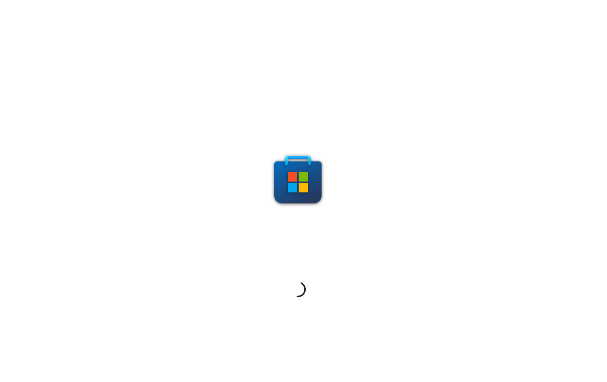
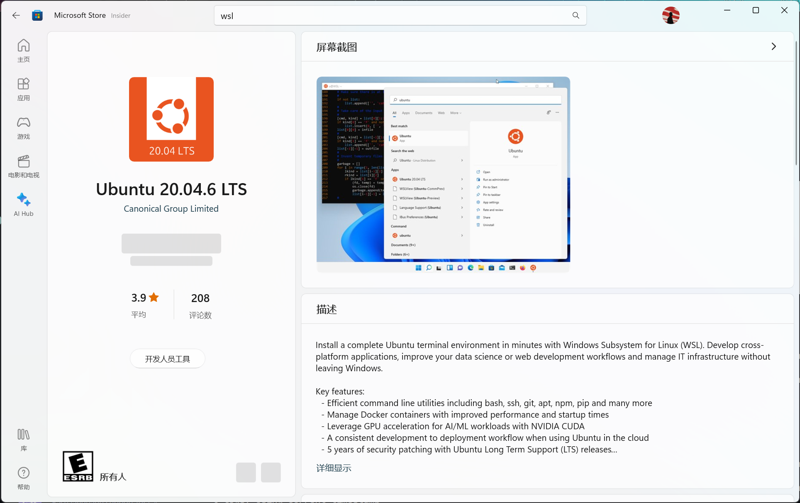
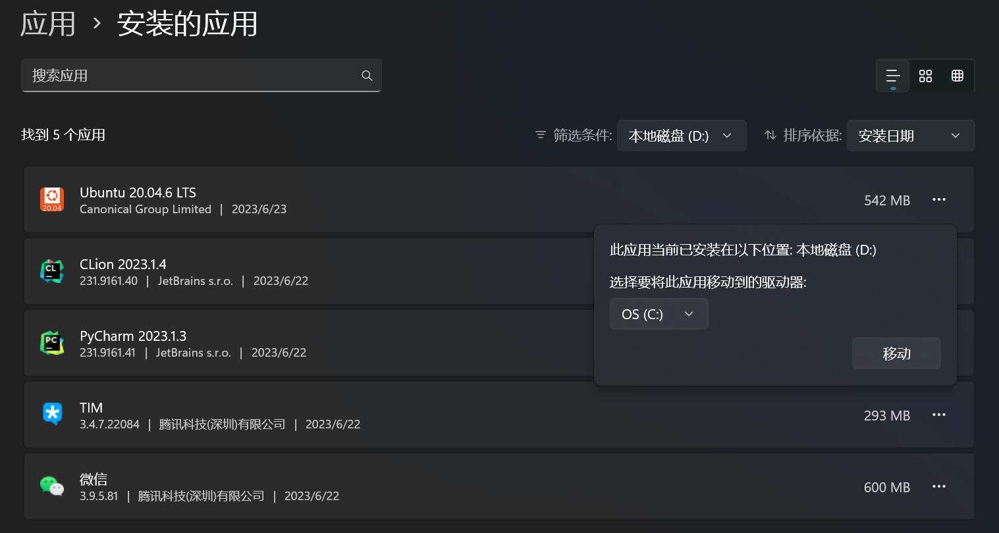
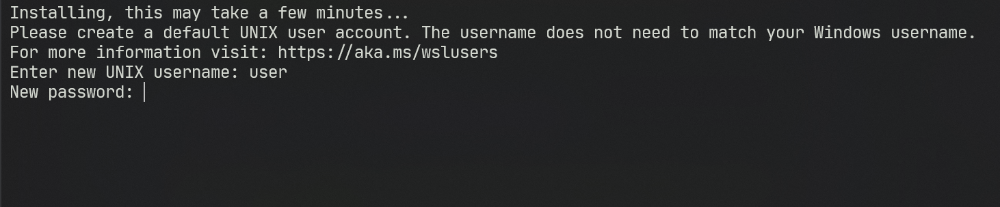

PWN环境配置记录☍
约 1394 个字 2126 行代码 预计阅读时间 217 分钟
Linux环境搭建☍
通过WSL配置环境☍
使用前提
- 必须运行 Windows 10 版本 2004 及更高版本（内部版本 19041 及更高版本）或 Windows 11 才能使用以下命令。 如果使用的是更早的版本，请参阅手动安装页。
- 在设置>应用>应用和功能>可选功能中启用适用于 Linux 的 Windows 子系统和虚拟机平台功能。
- 家庭版通过下面指令开启虚拟机平台功能。
安装 WSL 命令☍
检查 WSL 版本☍
注意WSL与WSL2存在较多区别，相较于WSL，WSL2更加稳定，推荐将默认WSL版本设置为WSL2
安装 Ubuntu ( WSL )☍
-
打开 Microsoft Store

-
搜索WSL或Ubuntu，选择合适版本下载
这里选择Ubuntu 20.04 LTS，网络教程还比较丰富，版本也比较新。 
-
安装完成后，打开Ubuntu，等待初始化
更换Ubuntu安装路径
在运行Ubuntu之前可以在设置应用中修改安装路径，这里默认安装在C盘，可以修改为其他盘符，以免C盘空间不足。  如果已经进行初始化可以参考网络教程进行迁移。
设定UNIX账户名和密码。等待WSL自动配置完成。 
WSL使用技巧
常用命令
WSL文件系统
WSL文件系统位于可以通过
\\wsl$访问WSL文件系统。注意
由于文件系统位于系统盘，因此不要在WSL中进行大量文件操作，以免占用过多系统盘空间。
WSL可以与Windows下的应用联动，例如VScode：
与VScodr联动
可以通过安装Remote - WSL插件，将VScode与WSL联动，可以在WSL中直接打开VScode，也可以在VScode中打开WSL。
同时也可以在Window下直接运行Liunux下的GUI应用，例如Wireshark等。 可以在 开始 > Ubuntu 20.04 中看到已安装的GUI应用。
通过VMware等配置虚拟机（暂略安装过程）☍
安装WMware Workstation Pro或其他虚拟化软件，在相关Linux发行版网站下载镜像文件，进行安装。
通过存储介质安装双系统（暂略安装过程）☍
注意
双系统安装过程中可能会出现数据丢失等情况，建议提前备份重要数据。
-
下载相关Linux发行版镜像文件，制作启动盘。
制作启动盘
可以使用UltraISO等软件制作启动盘。
-
在Windows中分出一定空间，用于安装Linux系统。
分区工具
可以使用DiskGenius等工具进行分区。
-
重启电脑，通过启动盘安装Linux系统。
安装过程
安装过程中需要注意分区，可以选择手动分区，将空间分出来，用于安装Linux系统。
注意
安装过程中可能会出现数据丢失等情况，建议提前备份重要数据。
-
安装完成后，重启电脑，选择启动项，进入Linux系统。
zch相关配置☍
相较于Ubuntu自带的bash，zch插件丰富，可以自定义配置，这里使用zch作为默认shell，并进行相关配置。
安装zch☍
安装oh-my-zsh (可选)☍
oh-my-zsh是一个开源的、社区驱动的框架，用于管理zsh配置，提供了大量的插件和主题，可以自定义配置。
官方wiki
在oh-my-zsh官方wiki中包含相关配置文档。
安装命令：
配置文件
# Enable Powerlevel10k instant prompt. Should stay close to the top of ~/.zshrc
# Initialization code that may require console input (password prompts, [y/n]
# confirmations, etc.) must go above this block; everything else may go below
eval "$(zoxide init zsh)"
[ -f /opt/miniconda3/etc/profile.d/conda.sh ] && source /opt/miniconda3/etc/profile.d/conda.sh
if [[ -r "${XDG_CACHE_HOME:-$HOME/.cache}/p10k-instant-prompt-${(%):-%n}.zsh" ]]; then
source "${XDG_CACHE_HOME:-$HOME/.cache}/p10k-instant-prompt-${(%):-%n}.zsh"
fi
# If you come from bash you might have to change your $PATH
# export PATH=$HOME/bin:/usr/local/bin:$PATH
# Path to your oh-my-zsh installation
export ZSH="$HOME/.oh-my-zsh"
# Set name of the theme to load --- if set to "random", it will
# load a random theme each time oh-my-zsh is loaded, in which case
# to know which specific one was loaded, run: echo $RANDOM_THEME
# See <https://github.com/ohmyzsh/ohmyzsh/wiki/Themes>
ZSH_THEME="powerlevel10k/powerlevel10k"
# Set list of themes to pick from when loading at random
# Setting this variable when ZSH_THEME=random will cause zsh to load
# a theme from this variable instead of looking in $ZSH/themes/
# If set to an empty array, this variable will have no effect
# ZSH_THEME_RANDOM_CANDIDATES=( "robbyrussell" "agnoster" )
# Uncomment the following line to use case-sensitive completion
# CASE_SENSITIVE="true"
# Uncomment the following line to use hyphen-insensitive completion
# Case-sensitive completion must be off. _ and - will be interchangeable
# HYPHEN_INSENSITIVE="true"
# Uncomment one of the following lines to change the auto-update behavior
# zstyle ':omz:update' mode disabled # disable automatic updates
# zstyle ':omz:update' mode auto # update automatically without asking
# zstyle ':omz:update' mode reminder # just remind me to update when it's time
# Uncomment the following line to change how often to auto-update (in days)
# zstyle ':omz:update' frequency 13
# Uncomment the following line if pasting URLs and other text is messed up
# DISABLE_MAGIC_FUNCTIONS="true"
# Uncomment the following line to disable colors in ls
# DISABLE_LS_COLORS="true"
# Uncomment the following line to disable auto-setting terminal title
# DISABLE_AUTO_TITLE="true"
# Uncomment the following line to enable command auto-correction
# ENABLE_CORRECTION="true"
# Uncomment the following line to display red dots whilst waiting for completion
# You can also set it to another string to have that shown instead of the default red dots
# e.g. COMPLETION_WAITING_DOTS="%F{yellow}waiting...%f"
# Caution: this setting can cause issues with multiline prompts in zsh < 5.7.1 (see #5765)
# COMPLETION_WAITING_DOTS="true"
# Uncomment the following line if you want to disable marking untracked files
# under VCS as dirty. This makes repository status check for large repositories
# much, much faster
# DISABLE_UNTRACKED_FILES_DIRTY="true"
# Uncomment the following line if you want to change the command execution time
# stamp shown in the history command output
# You can set one of the optional three formats
# "mm/dd/yyyy"|"dd.mm.yyyy"|"yyyy-mm-dd"
# or set a custom format using the strftime function format specifications
# see 'man strftime' for details
# HIST_STAMPS="mm/dd/yyyy"
# Would you like to use another custom folder than $ZSH/custom?
# ZSH_CUSTOM=/path/to/new-custom-folder
# Which plugins would you like to load?
# Standard plugins can be found in $ZSH/plugins/
# Custom plugins may be added to $ZSH_CUSTOM/plugins/
# Example format: plugins=(rails git textmate ruby lighthouse)
# Add wisely, as too many plugins slow down shell startup
plugins=(
git
web-search
)
# This speeds up pasting w/ autosuggest
# <https://github.com/zsh-users/zsh-autosuggestions/issues/238>
pasteinit() {
OLD_SELF_INSERT=${${(s.:.)widgets[self-insert]}[2,3]}
zle -N self-insert url-quote-magic # I wonder if you'd need `.url-quote-magic`?
}
pastefinish() {
zle -N self-insert $OLD_SELF_INSERT
}
zstyle :bracketed-paste-magic paste-init pasteinit
zstyle :bracketed-paste-magic paste-finish pastefinish
source $ZSH/oh-my-zsh.sh
source ~/.zsh/zsh-autosuggestions/zsh-autosuggestions.zsh
source ~/.zsh/fast-syntax-highlighting/fast-syntax-highlighting.plugin.zsh
source ~/.zsh/fzf-tab/fzf-tab.plugin.zsh
source ~/.zsh/fzf.zsh
alias ls="exa --icons"
alias cls="clear"
alias ll="exa -l --icons"
alias la="exa -a --icons"
alias lla="exa -la --icons"
alias q="exit"
alias find="fdfind"
alias cat="batcat"
alias os="neofetch"
HISTFILE=$HOME/.zsh/cache/zsh_history
HISTSIZE=5000
SAVEHIST=5000
## Settings for umask
setopt appendhistory
setopt appendhistory
setopt INC_APPEND_HISTORY
setopt SHARE_HISTORY
# User configuration
# export MANPATH="/usr/local/man:$MANPATH"
# You may need to manually set your language environment
# export LANG=en_US.UTF-8
# Preferred editor for local and remote sessions
# if [[ -n $SSH_CONNECTION ]]; then
# export EDITOR='vim'
# else
# export EDITOR='mvim'
# fi
# Compilation flags
# export ARCHFLAGS="-arch x86_64"
# Set personal aliases, overriding those provided by oh-my-zsh libs
# plugins, and themes. Aliases can be placed here, though oh-my-zsh
# users are encouraged to define aliases within the ZSH_CUSTOM folder
# For a full list of active aliases, run `alias`
#
# Example aliases
# alias zshconfig="mate ~/.zshrc"
# alias ohmyzsh="mate ~/.oh-my-zsh"
# To customize prompt, run `p10k configure` or edit ~/.p10k.zsh
[[ ! -f ~/.p10k.zsh ]] || source ~/.p10k.zsh
[ -f ~/.fzf.zsh ] && source ~/.fzf.zsh
安装Powerlevel10k(推荐)☍
Powerlevel10k是一个zsh主题，可以自定义配置，提供了丰富的配置选项，可以根据自己的喜好进行配置。其启动方式可以大大增加zsh的启动速度。
安装完成后，重启终端将会自动进入配置页面，根据个人喜好进行配置。
参考配置
注意
此配置需要oh-my-zsh支持
# Generated by Powerlevel10k configuration wizard on 2023-08-08 at 13:30 CST.
# Based on romkatv/powerlevel10k/config/p10k-rainbow.zsh, checksum 47269.
# Wizard options: nerdfont-complete + powerline, small icons, rainbow, unicode,
# angled separators, sharp heads, flat tails, 2 lines, solid, left frame,
# lightest-ornaments, sparse, few icons, concise, transient_prompt,
# instant_prompt=verbose.
# Type `p10k configure` to generate another config.
#
# Config for Powerlevel10k with powerline prompt style with colorful background.
# Type `p10k configure` to generate your own config based on it.
#
# Tip: Looking for a nice color? Here's a one-liner to print colormap.
#
# for i in {0..255}; do print -Pn "%K{$i} %k%F{$i}${(l:3::0:)i}%f " ${${(M)$((i%6)):#3}:+$'\n'}; done
# Temporarily change options.
'builtin' 'local' '-a' 'p10k_config_opts'
[[ ! -o 'aliases' ]] || p10k_config_opts+=('aliases')
[[ ! -o 'sh_glob' ]] || p10k_config_opts+=('sh_glob')
[[ ! -o 'no_brace_expand' ]] || p10k_config_opts+=('no_brace_expand')
'builtin' 'setopt' 'no_aliases' 'no_sh_glob' 'brace_expand'
() {
emulate -L zsh -o extended_glob
# Unset all configuration options. This allows you to apply configuration changes without
# restarting zsh. Edit ~/.p10k.zsh and type `source ~/.p10k.zsh`.
unset -m '(POWERLEVEL9K_*|DEFAULT_USER)~POWERLEVEL9K_GITSTATUS_DIR'
# Zsh >= 5.1 is required.
[[ $ZSH_VERSION == (5.<1->*|<6->.*) ]] || return
# The list of segments shown on the left. Fill it with the most important segments.
typeset -g POWERLEVEL9K_LEFT_PROMPT_ELEMENTS=(
# =========================[ Line #1 ]=========================
os_icon # os identifier
dir # current directory
vcs # git status
# =========================[ Line #2 ]=========================
newline # \n
# prompt_char # prompt symbol
)
# The list of segments shown on the right. Fill it with less important segments.
# Right prompt on the last prompt line (where you are typing your commands) gets
# automatically hidden when the input line reaches it. Right prompt above the
# last prompt line gets hidden if it would overlap with left prompt.
typeset -g POWERLEVEL9K_RIGHT_PROMPT_ELEMENTS=(
# =========================[ Line #1 ]=========================
command_execution_time # duration of the last command
status # exit code of the last command
background_jobs # presence of background jobs
direnv # direnv status (https://direnv.net/)
asdf # asdf version manager (https://github.com/asdf-vm/asdf)
virtualenv # python virtual environment (https://docs.python.org/3/library/venv.html)
anaconda # conda environment (https://conda.io/)
pyenv # python environment (https://github.com/pyenv/pyenv)
goenv # go environment (https://github.com/syndbg/goenv)
nodenv # node.js version from nodenv (https://github.com/nodenv/nodenv)
nvm # node.js version from nvm (https://github.com/nvm-sh/nvm)
nodeenv # node.js environment (https://github.com/ekalinin/nodeenv)
# node_version # node.js version
# go_version # go version (https://golang.org)
# rust_version # rustc version (https://www.rust-lang.org)
# dotnet_version # .NET version (https://dotnet.microsoft.com)
# php_version # php version (https://www.php.net/)
# laravel_version # laravel php framework version (https://laravel.com/)
# java_version # java version (https://www.java.com/)
# package # name@version from package.json (https://docs.npmjs.com/files/package.json)
rbenv # ruby version from rbenv (https://github.com/rbenv/rbenv)
rvm # ruby version from rvm (https://rvm.io)
fvm # flutter version management (https://github.com/leoafarias/fvm)
luaenv # lua version from luaenv (https://github.com/cehoffman/luaenv)
jenv # java version from jenv (https://github.com/jenv/jenv)
plenv # perl version from plenv (https://github.com/tokuhirom/plenv)
perlbrew # perl version from perlbrew (https://github.com/gugod/App-perlbrew)
phpenv # php version from phpenv (https://github.com/phpenv/phpenv)
scalaenv # scala version from scalaenv (https://github.com/scalaenv/scalaenv)
haskell_stack # haskell version from stack (https://haskellstack.org/)
kubecontext # current kubernetes context (https://kubernetes.io/)
terraform # terraform workspace (https://www.terraform.io)
# terraform_version # terraform version (https://www.terraform.io)
aws # aws profile (https://docs.aws.amazon.com/cli/latest/userguide/cli-configure-profiles.html)
aws_eb_env # aws elastic beanstalk environment (https://aws.amazon.com/elasticbeanstalk/)
azure # azure account name (https://docs.microsoft.com/en-us/cli/azure)
gcloud # google cloud cli account and project (https://cloud.google.com/)
google_app_cred # google application credentials (https://cloud.google.com/docs/authentication/production)
toolbox # toolbox name (https://github.com/containers/toolbox)
context # user@hostname
nordvpn # nordvpn connection status, linux only (https://nordvpn.com/)
ranger # ranger shell (https://github.com/ranger/ranger)
nnn # nnn shell (https://github.com/jarun/nnn)
lf # lf shell (https://github.com/gokcehan/lf)
xplr # xplr shell (https://github.com/sayanarijit/xplr)
vim_shell # vim shell indicator (:sh)
midnight_commander # midnight commander shell (https://midnight-commander.org/)
nix_shell # nix shell (https://nixos.org/nixos/nix-pills/developing-with-nix-shell.html)
chezmoi_shell # chezmoi shell (https://www.chezmoi.io/)
vi_mode # vi mode (you don't need this if you've enabled prompt_char)
# vpn_ip # virtual private network indicator
# load # CPU load
# disk_usage # disk usage
# ram # free RAM
# swap # used swap
todo # todo items (https://github.com/todotxt/todo.txt-cli)
timewarrior # timewarrior tracking status (https://timewarrior.net/)
taskwarrior # taskwarrior task count (https://taskwarrior.org/)
per_directory_history # Oh My Zsh per-directory-history local/global indicator
cpu_arch # CPU architecture
# time # current time
# =========================[ Line #2 ]=========================
# newline
# ip # ip address and bandwidth usage for a specified network interface
# public_ip # public IP address
# proxy # system-wide http/https/ftp proxy
battery # internal battery
# wifi # wifi speed
# example # example user-defined segment (see prompt_example function below)
)
# Defines character set used by powerlevel10k. It's best to let `p10k configure` set it for you.
typeset -g POWERLEVEL9K_MODE=nerdfont-complete
# When set to `moderate`, some icons will have an extra space after them. This is meant to avoid
# icon overlap when using non-monospace fonts. When set to `none`, spaces are not added.
typeset -g POWERLEVEL9K_ICON_PADDING=none
# When set to true, icons appear before content on both sides of the prompt. When set
# to false, icons go after content. If empty or not set, icons go before content in the left
# prompt and after content in the right prompt.
#
# You can also override it for a specific segment:
#
# POWERLEVEL9K_STATUS_ICON_BEFORE_CONTENT=false
#
# Or for a specific segment in specific state:
#
# POWERLEVEL9K_DIR_NOT_WRITABLE_ICON_BEFORE_CONTENT=false
typeset -g POWERLEVEL9K_ICON_BEFORE_CONTENT=
# Add an empty line before each prompt.
typeset -g POWERLEVEL9K_PROMPT_ADD_NEWLINE=true
# Connect left prompt lines with these symbols. You'll probably want to use the same color
# as POWERLEVEL9K_MULTILINE_FIRST_PROMPT_GAP_FOREGROUND below.
typeset -g POWERLEVEL9K_MULTILINE_FIRST_PROMPT_PREFIX='%244F╭─'
typeset -g POWERLEVEL9K_MULTILINE_NEWLINE_PROMPT_PREFIX='%244F├─'
typeset -g POWERLEVEL9K_MULTILINE_LAST_PROMPT_PREFIX='%244F╰─'
# Connect right prompt lines with these symbols.
typeset -g POWERLEVEL9K_MULTILINE_FIRST_PROMPT_SUFFIX=
typeset -g POWERLEVEL9K_MULTILINE_NEWLINE_PROMPT_SUFFIX=
typeset -g POWERLEVEL9K_MULTILINE_LAST_PROMPT_SUFFIX=
# Filler between left and right prompt on the first prompt line. You can set it to ' ', '·' or
# '─'. The last two make it easier to see the alignment between left and right prompt and to
# separate prompt from command output. You might want to set POWERLEVEL9K_PROMPT_ADD_NEWLINE=false
# for more compact prompt if using this option.
typeset -g POWERLEVEL9K_MULTILINE_FIRST_PROMPT_GAP_CHAR='─'
typeset -g POWERLEVEL9K_MULTILINE_FIRST_PROMPT_GAP_BACKGROUND=
typeset -g POWERLEVEL9K_MULTILINE_NEWLINE_PROMPT_GAP_BACKGROUND=
if [[ $POWERLEVEL9K_MULTILINE_FIRST_PROMPT_GAP_CHAR != ' ' ]]; then
# The color of the filler. You'll probably want to match the color of POWERLEVEL9K_MULTILINE
# ornaments defined above.
typeset -g POWERLEVEL9K_MULTILINE_FIRST_PROMPT_GAP_FOREGROUND=244
# Start filler from the edge of the screen if there are no left segments on the first line.
typeset -g POWERLEVEL9K_EMPTY_LINE_LEFT_PROMPT_FIRST_SEGMENT_END_SYMBOL='%{%}'
# End filler on the edge of the screen if there are no right segments on the first line.
typeset -g POWERLEVEL9K_EMPTY_LINE_RIGHT_PROMPT_FIRST_SEGMENT_START_SYMBOL='%{%}'
fi
# Separator between same-color segments on the left.
typeset -g POWERLEVEL9K_LEFT_SUBSEGMENT_SEPARATOR='\uE0B1'
# Separator between same-color segments on the right.
typeset -g POWERLEVEL9K_RIGHT_SUBSEGMENT_SEPARATOR='\uE0B3'
# Separator between different-color segments on the left.
typeset -g POWERLEVEL9K_LEFT_SEGMENT_SEPARATOR='\uE0B0'
# Separator between different-color segments on the right.
typeset -g POWERLEVEL9K_RIGHT_SEGMENT_SEPARATOR='\uE0B2'
# To remove a separator between two segments, add "_joined" to the second segment name.
# For example: POWERLEVEL9K_RIGHT_PROMPT_ELEMENTS=(os_icon context_joined)
# The right end of left prompt.
typeset -g POWERLEVEL9K_LEFT_PROMPT_LAST_SEGMENT_END_SYMBOL='\uE0B0'
# The left end of right prompt.
typeset -g POWERLEVEL9K_RIGHT_PROMPT_FIRST_SEGMENT_START_SYMBOL='\uE0B2'
# The left end of left prompt.
typeset -g POWERLEVEL9K_LEFT_PROMPT_FIRST_SEGMENT_START_SYMBOL=''
# The right end of right prompt.
typeset -g POWERLEVEL9K_RIGHT_PROMPT_LAST_SEGMENT_END_SYMBOL=''
# Left prompt terminator for lines without any segments.
typeset -g POWERLEVEL9K_EMPTY_LINE_LEFT_PROMPT_LAST_SEGMENT_END_SYMBOL=
#################################[ os_icon: os identifier ]##################################
# OS identifier color.
typeset -g POWERLEVEL9K_OS_ICON_FOREGROUND=0
typeset -g POWERLEVEL9K_OS_ICON_BACKGROUND=15
# Custom icon.
# typeset -g POWERLEVEL9K_OS_ICON_CONTENT_EXPANSION='⭐'
################################[ prompt_char: prompt symbol ]################################
# Transparent background.
typeset -g POWERLEVEL9K_PROMPT_CHAR_BACKGROUND=
# Green prompt symbol if the last command succeeded.
typeset -g POWERLEVEL9K_PROMPT_CHAR_OK_{VIINS,VICMD,VIVIS,VIOWR}_FOREGROUND=48
# Red prompt symbol if the last command failed.
typeset -g POWERLEVEL9K_PROMPT_CHAR_ERROR_{VIINS,VICMD,VIVIS,VIOWR}_FOREGROUND=196
# Default prompt symbol.
typeset -g POWERLEVEL9K_PROMPT_CHAR_{OK,ERROR}_VIINS_CONTENT_EXPANSION='>'
# Prompt symbol in command vi mode.
typeset -g POWERLEVEL9K_PROMPT_CHAR_{OK,ERROR}_VICMD_CONTENT_EXPANSION='<'
# Prompt symbol in visual vi mode.
typeset -g POWERLEVEL9K_PROMPT_CHAR_{OK,ERROR}_VIVIS_CONTENT_EXPANSION='V'
# Prompt symbol in overwrite vi mode.
typeset -g POWERLEVEL9K_PROMPT_CHAR_{OK,ERROR}_VIOWR_CONTENT_EXPANSION='▶'
typeset -g POWERLEVEL9K_PROMPT_CHAR_OVERWRITE_STATE=true
# No line terminator if prompt_char is the last segment.
typeset -g POWERLEVEL9K_PROMPT_CHAR_LEFT_PROMPT_LAST_SEGMENT_END_SYMBOL=
# No line introducer if prompt_char is the first segment.
typeset -g POWERLEVEL9K_PROMPT_CHAR_LEFT_PROMPT_FIRST_SEGMENT_START_SYMBOL=
# No surrounding whitespace.
typeset -g POWERLEVEL9K_PROMPT_CHAR_LEFT_{LEFT,RIGHT}_WHITESPACE=
##################################[ dir: current directory ]##################################
# Current directory background color.
typeset -g POWERLEVEL9K_DIR_BACKGROUND=27
# Default current directory foreground color.
typeset -g POWERLEVEL9K_DIR_FOREGROUND=254
# If directory is too long, shorten some of its segments to the shortest possible unique
# prefix. The shortened directory can be tab-completed to the original.
typeset -g POWERLEVEL9K_SHORTEN_STRATEGY=truncate_to_unique
# Replace removed segment suffixes with this symbol.
typeset -g POWERLEVEL9K_SHORTEN_DELIMITER=
# Color of the shortened directory segments.
typeset -g POWERLEVEL9K_DIR_SHORTENED_FOREGROUND=250
# Color of the anchor directory segments. Anchor segments are never shortened. The first
# segment is always an anchor.
typeset -g POWERLEVEL9K_DIR_ANCHOR_FOREGROUND=255
# Display anchor directory segments in bold.
typeset -g POWERLEVEL9K_DIR_ANCHOR_BOLD=true
# Don't shorten directories that contain any of these files. They are anchors.
local anchor_files=(
.bzr
.citc
.git
.hg
.node-version
.python-version
.go-version
.ruby-version
.lua-version
.java-version
.perl-version
.php-version
.tool-version
.shorten_folder_marker
.svn
.terraform
CVS
Cargo.toml
composer.json
go.mod
package.json
stack.yaml
)
typeset -g POWERLEVEL9K_SHORTEN_FOLDER_MARKER="(${(j:|:)anchor_files})"
# If set to "first" ("last"), remove everything before the first (last) subdirectory that contains
# files matching $POWERLEVEL9K_SHORTEN_FOLDER_MARKER. For example, when the current directory is
# /foo/bar/git_repo/nested_git_repo/baz, prompt will display git_repo/nested_git_repo/baz (first)
# or nested_git_repo/baz (last). This assumes that git_repo and nested_git_repo contain markers
# and other directories don't.
#
# Optionally, "first" and "last" can be followed by ":<offset>" where <offset> is an integer.
# This moves the truncation point to the right (positive offset) or to the left (negative offset)
# relative to the marker. Plain "first" and "last" are equivalent to "first:0" and "last:0"
# respectively.
typeset -g POWERLEVEL9K_DIR_TRUNCATE_BEFORE_MARKER=false
# Don't shorten this many last directory segments. They are anchors.
typeset -g POWERLEVEL9K_SHORTEN_DIR_LENGTH=1
# Shorten directory if it's longer than this even if there is space for it. The value can
# be either absolute (e.g., '80') or a percentage of terminal width (e.g, '50%'). If empty,
# directory will be shortened only when prompt doesn't fit or when other parameters demand it
# (see POWERLEVEL9K_DIR_MIN_COMMAND_COLUMNS and POWERLEVEL9K_DIR_MIN_COMMAND_COLUMNS_PCT below).
# If set to `0`, directory will always be shortened to its minimum length.
typeset -g POWERLEVEL9K_DIR_MAX_LENGTH=80
# When `dir` segment is on the last prompt line, try to shorten it enough to leave at least this
# many columns for typing commands.
typeset -g POWERLEVEL9K_DIR_MIN_COMMAND_COLUMNS=40
# When `dir` segment is on the last prompt line, try to shorten it enough to leave at least
# COLUMNS * POWERLEVEL9K_DIR_MIN_COMMAND_COLUMNS_PCT * 0.01 columns for typing commands.
typeset -g POWERLEVEL9K_DIR_MIN_COMMAND_COLUMNS_PCT=50
# If set to true, embed a hyperlink into the directory. Useful for quickly
# opening a directory in the file manager simply by clicking the link.
# Can also be handy when the directory is shortened, as it allows you to see
# the full directory that was used in previous commands.
typeset -g POWERLEVEL9K_DIR_HYPERLINK=false
# Enable special styling for non-writable and non-existent directories. See POWERLEVEL9K_LOCK_ICON
# and POWERLEVEL9K_DIR_CLASSES below.
typeset -g POWERLEVEL9K_DIR_SHOW_WRITABLE=v3
# The default icon shown next to non-writable and non-existent directories when
# POWERLEVEL9K_DIR_SHOW_WRITABLE is set to v3.
# typeset -g POWERLEVEL9K_LOCK_ICON='⭐'
# POWERLEVEL9K_DIR_CLASSES allows you to specify custom icons and colors for different
# directories. It must be an array with 3 * N elements. Each triplet consists of:
#
# 1. A pattern against which the current directory ($PWD) is matched. Matching is done with
# extended_glob option enabled.
# 2. Directory class for the purpose of styling.
# 3. An empty string.
#
# Triplets are tried in order. The first triplet whose pattern matches $PWD wins.
#
# If POWERLEVEL9K_DIR_SHOW_WRITABLE is set to v3, non-writable and non-existent directories
# acquire class suffix _NOT_WRITABLE and NON_EXISTENT respectively.
#
# For example, given these settings:
#
# typeset -g POWERLEVEL9K_DIR_CLASSES=(
# '~/work(|/*)' WORK ''
# '~(|/*)' HOME ''
# '*' DEFAULT '')
#
# Whenever the current directory is ~/work or a subdirectory of ~/work, it gets styled with one
# of the following classes depending on its writability and existence: WORK, WORK_NOT_WRITABLE or
# WORK_NON_EXISTENT.
#
# Simply assigning classes to directories doesn't have any visible effects. It merely gives you an
# option to define custom colors and icons for different directory classes.
#
# # Styling for WORK.
# typeset -g POWERLEVEL9K_DIR_WORK_VISUAL_IDENTIFIER_EXPANSION='⭐'
# typeset -g POWERLEVEL9K_DIR_WORK_BACKGROUND=4
# typeset -g POWERLEVEL9K_DIR_WORK_FOREGROUND=254
# typeset -g POWERLEVEL9K_DIR_WORK_SHORTENED_FOREGROUND=250
# typeset -g POWERLEVEL9K_DIR_WORK_ANCHOR_FOREGROUND=255
#
# # Styling for WORK_NOT_WRITABLE.
# typeset -g POWERLEVEL9K_DIR_WORK_NOT_WRITABLE_VISUAL_IDENTIFIER_EXPANSION='⭐'
# typeset -g POWERLEVEL9K_DIR_WORK_NOT_WRITABLE_BACKGROUND=4
# typeset -g POWERLEVEL9K_DIR_WORK_NOT_WRITABLE_FOREGROUND=254
# typeset -g POWERLEVEL9K_DIR_WORK_NOT_WRITABLE_SHORTENED_FOREGROUND=250
# typeset -g POWERLEVEL9K_DIR_WORK_NOT_WRITABLE_ANCHOR_FOREGROUND=255
#
# # Styling for WORK_NON_EXISTENT.
# typeset -g POWERLEVEL9K_DIR_WORK_NON_EXISTENT_VISUAL_IDENTIFIER_EXPANSION='⭐'
# typeset -g POWERLEVEL9K_DIR_WORK_NON_EXISTENT_BACKGROUND=4
# typeset -g POWERLEVEL9K_DIR_WORK_NON_EXISTENT_FOREGROUND=254
# typeset -g POWERLEVEL9K_DIR_WORK_NON_EXISTENT_SHORTENED_FOREGROUND=250
# typeset -g POWERLEVEL9K_DIR_WORK_NON_EXISTENT_ANCHOR_FOREGROUND=255
#
# If a styling parameter isn't explicitly defined for some class, it falls back to the classless
# parameter. For example, if POWERLEVEL9K_DIR_WORK_NOT_WRITABLE_FOREGROUND is not set, it falls
# back to POWERLEVEL9K_DIR_FOREGROUND.
#
typeset -g POWERLEVEL9K_DIR_CLASSES=()
# Custom prefix.
# typeset -g POWERLEVEL9K_DIR_PREFIX='in '
#####################################[ vcs: git status ]######################################
# Version control background colors.
typeset -g POWERLEVEL9K_VCS_CLEAN_BACKGROUND=2
typeset -g POWERLEVEL9K_VCS_MODIFIED_BACKGROUND=3
typeset -g POWERLEVEL9K_VCS_UNTRACKED_BACKGROUND=2
typeset -g POWERLEVEL9K_VCS_CONFLICTED_BACKGROUND=3
typeset -g POWERLEVEL9K_VCS_LOADING_BACKGROUND=8
# Branch icon. Set this parameter to '\UE0A0 ' for the popular Powerline branch icon.
typeset -g POWERLEVEL9K_VCS_BRANCH_ICON=
# Untracked files icon. It's really a question mark, your font isn't broken.
# Change the value of this parameter to show a different icon.
typeset -g POWERLEVEL9K_VCS_UNTRACKED_ICON='?'
# Formatter for Git status.
#
# Example output: master wip ⇣42⇡42 *42 merge ~42 +42 !42 ?42.
#
# You can edit the function to customize how Git status looks.
#
# VCS_STATUS_* parameters are set by gitstatus plugin. See reference:
# https://github.com/romkatv/gitstatus/blob/master/gitstatus.plugin.zsh.
function my_git_formatter() {
emulate -L zsh
if [[ -n $P9K_CONTENT ]]; then
# If P9K_CONTENT is not empty, use it. It's either "loading" or from vcs_info (not from
# gitstatus plugin). VCS_STATUS_* parameters are not available in this case.
typeset -g my_git_format=$P9K_CONTENT
return
fi
# Styling for different parts of Git status.
local meta='%7F' # white foreground
local clean='%0F' # black foreground
local modified='%0F' # black foreground
local untracked='%0F' # black foreground
local conflicted='%1F' # red foreground
local res
if [[ -n $VCS_STATUS_LOCAL_BRANCH ]]; then
local branch=${(V)VCS_STATUS_LOCAL_BRANCH}
# If local branch name is at most 32 characters long, show it in full.
# Otherwise show the first 12 … the last 12.
# Tip: To always show local branch name in full without truncation, delete the next line.
(( $#branch > 32 )) && branch[13,-13]="…" # <-- this line
res+="${clean}${(g::)POWERLEVEL9K_VCS_BRANCH_ICON}${branch//\%/%%}"
fi
if [[ -n $VCS_STATUS_TAG
# Show tag only if not on a branch.
# Tip: To always show tag, delete the next line.
&& -z $VCS_STATUS_LOCAL_BRANCH # <-- this line
]]; then
local tag=${(V)VCS_STATUS_TAG}
# If tag name is at most 32 characters long, show it in full.
# Otherwise show the first 12 … the last 12.
# Tip: To always show tag name in full without truncation, delete the next line.
(( $#tag > 32 )) && tag[13,-13]="…" # <-- this line
res+="${meta}#${clean}${tag//\%/%%}"
fi
# Display the current Git commit if there is no branch and no tag.
# Tip: To always display the current Git commit, delete the next line.
[[ -z $VCS_STATUS_LOCAL_BRANCH && -z $VCS_STATUS_TAG ]] && # <-- this line
res+="${meta}@${clean}${VCS_STATUS_COMMIT[1,8]}"
# Show tracking branch name if it differs from local branch.
if [[ -n ${VCS_STATUS_REMOTE_BRANCH:#$VCS_STATUS_LOCAL_BRANCH} ]]; then
res+="${meta}:${clean}${(V)VCS_STATUS_REMOTE_BRANCH//\%/%%}"
fi
# Display "wip" if the latest commit's summary contains "wip" or "WIP".
if [[ $VCS_STATUS_COMMIT_SUMMARY == (|*[^[:alnum:]])(wip|WIP)(|[^[:alnum:]]*) ]]; then
res+=" ${modified}wip"
fi
if (( VCS_STATUS_COMMITS_AHEAD || VCS_STATUS_COMMITS_BEHIND )); then
# ⇣42 if behind the remote.
(( VCS_STATUS_COMMITS_BEHIND )) && res+=" ${clean}⇣${VCS_STATUS_COMMITS_BEHIND}"
# ⇡42 if ahead of the remote; no leading space if also behind the remote: ⇣42⇡42.
(( VCS_STATUS_COMMITS_AHEAD && !VCS_STATUS_COMMITS_BEHIND )) && res+=" "
(( VCS_STATUS_COMMITS_AHEAD )) && res+="${clean}⇡${VCS_STATUS_COMMITS_AHEAD}"
elif [[ -n $VCS_STATUS_REMOTE_BRANCH ]]; then
# Tip: Uncomment the next line to display '=' if up to date with the remote.
# res+=" ${clean}="
fi
# ⇠42 if behind the push remote.
(( VCS_STATUS_PUSH_COMMITS_BEHIND )) && res+=" ${clean}⇠${VCS_STATUS_PUSH_COMMITS_BEHIND}"
(( VCS_STATUS_PUSH_COMMITS_AHEAD && !VCS_STATUS_PUSH_COMMITS_BEHIND )) && res+=" "
# ⇢42 if ahead of the push remote; no leading space if also behind: ⇠42⇢42.
(( VCS_STATUS_PUSH_COMMITS_AHEAD )) && res+="${clean}⇢${VCS_STATUS_PUSH_COMMITS_AHEAD}"
# *42 if have stashes.
(( VCS_STATUS_STASHES )) && res+=" ${clean}*${VCS_STATUS_STASHES}"
# 'merge' if the repo is in an unusual state.
[[ -n $VCS_STATUS_ACTION ]] && res+=" ${conflicted}${VCS_STATUS_ACTION}"
# ~42 if have merge conflicts.
(( VCS_STATUS_NUM_CONFLICTED )) && res+=" ${conflicted}~${VCS_STATUS_NUM_CONFLICTED}"
# +42 if have staged changes.
(( VCS_STATUS_NUM_STAGED )) && res+=" ${modified}+${VCS_STATUS_NUM_STAGED}"
# !42 if have unstaged changes.
(( VCS_STATUS_NUM_UNSTAGED )) && res+=" ${modified}!${VCS_STATUS_NUM_UNSTAGED}"
# ?42 if have untracked files. It's really a question mark, your font isn't broken.
# See POWERLEVEL9K_VCS_UNTRACKED_ICON above if you want to use a different icon.
# Remove the next line if you don't want to see untracked files at all.
(( VCS_STATUS_NUM_UNTRACKED )) && res+=" ${untracked}${(g::)POWERLEVEL9K_VCS_UNTRACKED_ICON}${VCS_STATUS_NUM_UNTRACKED}"
# "─" if the number of unstaged files is unknown. This can happen due to
# POWERLEVEL9K_VCS_MAX_INDEX_SIZE_DIRTY (see below) being set to a non-negative number lower
# than the number of files in the Git index, or due to bash.showDirtyState being set to false
# in the repository config. The number of staged and untracked files may also be unknown
# in this case.
(( VCS_STATUS_HAS_UNSTAGED == -1 )) && res+=" ${modified}─"
typeset -g my_git_format=$res
}
functions -M my_git_formatter 2>/dev/null
# Don't count the number of unstaged, untracked and conflicted files in Git repositories with
# more than this many files in the index. Negative value means infinity.
#
# If you are working in Git repositories with tens of millions of files and seeing performance
# sagging, try setting POWERLEVEL9K_VCS_MAX_INDEX_SIZE_DIRTY to a number lower than the output
# of `git ls-files | wc -l`. Alternatively, add `bash.showDirtyState = false` to the repository's
# config: `git config bash.showDirtyState false`.
typeset -g POWERLEVEL9K_VCS_MAX_INDEX_SIZE_DIRTY=-1
# Don't show Git status in prompt for repositories whose workdir matches this pattern.
# For example, if set to '~', the Git repository at $HOME/.git will be ignored.
# Multiple patterns can be combined with '|': '~(|/foo)|/bar/baz/*'.
typeset -g POWERLEVEL9K_VCS_DISABLED_WORKDIR_PATTERN='~'
# Disable the default Git status formatting.
typeset -g POWERLEVEL9K_VCS_DISABLE_GITSTATUS_FORMATTING=true
# Install our own Git status formatter.
typeset -g POWERLEVEL9K_VCS_CONTENT_EXPANSION='${$((my_git_formatter()))+${my_git_format}}'
# Enable counters for staged, unstaged, etc.
typeset -g POWERLEVEL9K_VCS_{STAGED,UNSTAGED,UNTRACKED,CONFLICTED,COMMITS_AHEAD,COMMITS_BEHIND}_MAX_NUM=-1
# Custom icon.
typeset -g POWERLEVEL9K_VCS_VISUAL_IDENTIFIER_EXPANSION=
# Custom prefix.
# typeset -g POWERLEVEL9K_VCS_PREFIX='on '
# Show status of repositories of these types. You can add svn and/or hg if you are
# using them. If you do, your prompt may become slow even when your current directory
# isn't in an svn or hg repository.
typeset -g POWERLEVEL9K_VCS_BACKENDS=(git)
##########################[ status: exit code of the last command ]###########################
# Enable OK_PIPE, ERROR_PIPE and ERROR_SIGNAL status states to allow us to enable, disable and
# style them independently from the regular OK and ERROR state.
typeset -g POWERLEVEL9K_STATUS_EXTENDED_STATES=true
# Status on success. No content, just an icon. No need to show it if prompt_char is enabled as
# it will signify success by turning green.
typeset -g POWERLEVEL9K_STATUS_OK=true
typeset -g POWERLEVEL9K_STATUS_OK_VISUAL_IDENTIFIER_EXPANSION='✓'
typeset -g POWERLEVEL9K_STATUS_OK_FOREGROUND=015
typeset -g POWERLEVEL9K_STATUS_OK_BACKGROUND=022
# Status when some part of a pipe command fails but the overall exit status is zero. It may look
# like this: 1|0.
typeset -g POWERLEVEL9K_STATUS_OK_PIPE=true
typeset -g POWERLEVEL9K_STATUS_OK_PIPE_VISUAL_IDENTIFIER_EXPANSION='✔'
typeset -g POWERLEVEL9K_STATUS_OK_PIPE_FOREGROUND=2
typeset -g POWERLEVEL9K_STATUS_OK_PIPE_BACKGROUND=0
# Status when it's just an error code (e.g., '1'). No need to show it if prompt_char is enabled as
# it will signify error by turning red.
typeset -g POWERLEVEL9K_STATUS_ERROR=true
typeset -g POWERLEVEL9K_STATUS_ERROR_VISUAL_IDENTIFIER_EXPANSION='×'
typeset -g POWERLEVEL9K_STATUS_ERROR_FOREGROUND=015
typeset -g POWERLEVEL9K_STATUS_ERROR_BACKGROUND=052
# Status when the last command was terminated by a signal.
typeset -g POWERLEVEL9K_STATUS_ERROR_SIGNAL=true
# Use terse signal names: "INT" instead of "SIGINT(2)".
typeset -g POWERLEVEL9K_STATUS_VERBOSE_SIGNAME=false
typeset -g POWERLEVEL9K_STATUS_ERROR_SIGNAL_VISUAL_IDENTIFIER_EXPANSION='✖'
typeset -g POWERLEVEL9K_STATUS_ERROR_SIGNAL_FOREGROUND=3
typeset -g POWERLEVEL9K_STATUS_ERROR_SIGNAL_BACKGROUND=1
# Status when some part of a pipe command fails and the overall exit status is also non-zero.
# It may look like this: 1|0.
typeset -g POWERLEVEL9K_STATUS_ERROR_PIPE=true
typeset -g POWERLEVEL9K_STATUS_ERROR_PIPE_VISUAL_IDENTIFIER_EXPANSION='✖'
typeset -g POWERLEVEL9K_STATUS_ERROR_PIPE_FOREGROUND=3
typeset -g POWERLEVEL9K_STATUS_ERROR_PIPE_BACKGROUND=1
###################[ command_execution_time: duration of the last command ]###################
# Execution time color.
typeset -g POWERLEVEL9K_COMMAND_EXECUTION_TIME_FOREGROUND=027
typeset -g POWERLEVEL9K_COMMAND_EXECUTION_TIME_BACKGROUND=015
# Show duration of the last command if takes at least this many seconds.
typeset -g POWERLEVEL9K_COMMAND_EXECUTION_TIME_THRESHOLD=1
# Show this many fractional digits. Zero means round to seconds.
typeset -g POWERLEVEL9K_COMMAND_EXECUTION_TIME_PRECISION=0
# Duration format: 1d 2h 3m 4s.
typeset -g POWERLEVEL9K_COMMAND_EXECUTION_TIME_FORMAT='d h m s'
# Custom icon.
typeset -g POWERLEVEL9K_COMMAND_EXECUTION_TIME_VISUAL_IDENTIFIER_EXPANSION=
# Custom prefix.
# typeset -g POWERLEVEL9K_COMMAND_EXECUTION_TIME_PREFIX='took '
#######################[ background_jobs: presence of background jobs ]#######################
# Background jobs color.
typeset -g POWERLEVEL9K_BACKGROUND_JOBS_FOREGROUND=6
typeset -g POWERLEVEL9K_BACKGROUND_JOBS_BACKGROUND=0
# Don't show the number of background jobs.
typeset -g POWERLEVEL9K_BACKGROUND_JOBS_VERBOSE=false
# Custom icon.
# typeset -g POWERLEVEL9K_BACKGROUND_JOBS_VISUAL_IDENTIFIER_EXPANSION='⭐'
#######################[ direnv: direnv status (https://direnv.net/) ]########################
# Direnv color.
typeset -g POWERLEVEL9K_DIRENV_FOREGROUND=3
typeset -g POWERLEVEL9K_DIRENV_BACKGROUND=0
# Custom icon.
# typeset -g POWERLEVEL9K_DIRENV_VISUAL_IDENTIFIER_EXPANSION='⭐'
###############[ asdf: asdf version manager (https://github.com/asdf-vm/asdf) ]###############
# Default asdf color. Only used to display tools for which there is no color override (see below).
# Tip: Override these parameters for ${TOOL} with POWERLEVEL9K_ASDF_${TOOL}_FOREGROUND and
# POWERLEVEL9K_ASDF_${TOOL}_BACKGROUND.
typeset -g POWERLEVEL9K_ASDF_FOREGROUND=0
typeset -g POWERLEVEL9K_ASDF_BACKGROUND=7
# There are four parameters that can be used to hide asdf tools. Each parameter describes
# conditions under which a tool gets hidden. Parameters can hide tools but not unhide them. If at
# least one parameter decides to hide a tool, that tool gets hidden. If no parameter decides to
# hide a tool, it gets shown.
#
# Special note on the difference between POWERLEVEL9K_ASDF_SOURCES and
# POWERLEVEL9K_ASDF_PROMPT_ALWAYS_SHOW. Consider the effect of the following commands:
#
# asdf local python 3.8.1
# asdf global python 3.8.1
#
# After running both commands the current python version is 3.8.1 and its source is "local" as
# it takes precedence over "global". If POWERLEVEL9K_ASDF_PROMPT_ALWAYS_SHOW is set to false,
# it'll hide python version in this case because 3.8.1 is the same as the global version.
# POWERLEVEL9K_ASDF_SOURCES will hide python version only if the value of this parameter doesn't
# contain "local".
# Hide tool versions that don't come from one of these sources.
#
# Available sources:
#
# - shell `asdf current` says "set by ASDF_${TOOL}_VERSION environment variable"
# - local `asdf current` says "set by /some/not/home/directory/file"
# - global `asdf current` says "set by /home/username/file"
#
# Note: If this parameter is set to (shell local global), it won't hide tools.
# Tip: Override this parameter for ${TOOL} with POWERLEVEL9K_ASDF_${TOOL}_SOURCES.
typeset -g POWERLEVEL9K_ASDF_SOURCES=(shell local global)
# If set to false, hide tool versions that are the same as global.
#
# Note: The name of this parameter doesn't reflect its meaning at all.
# Note: If this parameter is set to true, it won't hide tools.
# Tip: Override this parameter for ${TOOL} with POWERLEVEL9K_ASDF_${TOOL}_PROMPT_ALWAYS_SHOW.
typeset -g POWERLEVEL9K_ASDF_PROMPT_ALWAYS_SHOW=false
# If set to false, hide tool versions that are equal to "system".
#
# Note: If this parameter is set to true, it won't hide tools.
# Tip: Override this parameter for ${TOOL} with POWERLEVEL9K_ASDF_${TOOL}_SHOW_SYSTEM.
typeset -g POWERLEVEL9K_ASDF_SHOW_SYSTEM=true
# If set to non-empty value, hide tools unless there is a file matching the specified file pattern
# in the current directory, or its parent directory, or its grandparent directory, and so on.
#
# Note: If this parameter is set to empty value, it won't hide tools.
# Note: SHOW_ON_UPGLOB isn't specific to asdf. It works with all prompt segments.
# Tip: Override this parameter for ${TOOL} with POWERLEVEL9K_ASDF_${TOOL}_SHOW_ON_UPGLOB.
#
# Example: Hide nodejs version when there is no package.json and no *.js files in the current
# directory, in `..`, in `../..` and so on.
#
# typeset -g POWERLEVEL9K_ASDF_NODEJS_SHOW_ON_UPGLOB='*.js|package.json'
typeset -g POWERLEVEL9K_ASDF_SHOW_ON_UPGLOB=
# Ruby version from asdf.
typeset -g POWERLEVEL9K_ASDF_RUBY_FOREGROUND=0
typeset -g POWERLEVEL9K_ASDF_RUBY_BACKGROUND=1
# typeset -g POWERLEVEL9K_ASDF_RUBY_VISUAL_IDENTIFIER_EXPANSION='⭐'
# typeset -g POWERLEVEL9K_ASDF_RUBY_SHOW_ON_UPGLOB='*.foo|*.bar'
# Python version from asdf.
typeset -g POWERLEVEL9K_ASDF_PYTHON_FOREGROUND=0
typeset -g POWERLEVEL9K_ASDF_PYTHON_BACKGROUND=4
# typeset -g POWERLEVEL9K_ASDF_PYTHON_VISUAL_IDENTIFIER_EXPANSION='⭐'
# typeset -g POWERLEVEL9K_ASDF_PYTHON_SHOW_ON_UPGLOB='*.foo|*.bar'
# Go version from asdf.
typeset -g POWERLEVEL9K_ASDF_GOLANG_FOREGROUND=0
typeset -g POWERLEVEL9K_ASDF_GOLANG_BACKGROUND=4
# typeset -g POWERLEVEL9K_ASDF_GOLANG_VISUAL_IDENTIFIER_EXPANSION='⭐'
# typeset -g POWERLEVEL9K_ASDF_GOLANG_SHOW_ON_UPGLOB='*.foo|*.bar'
# Node.js version from asdf.
typeset -g POWERLEVEL9K_ASDF_NODEJS_FOREGROUND=0
typeset -g POWERLEVEL9K_ASDF_NODEJS_BACKGROUND=2
# typeset -g POWERLEVEL9K_ASDF_NODEJS_VISUAL_IDENTIFIER_EXPANSION='⭐'
# typeset -g POWERLEVEL9K_ASDF_NODEJS_SHOW_ON_UPGLOB='*.foo|*.bar'
# Rust version from asdf.
typeset -g POWERLEVEL9K_ASDF_RUST_FOREGROUND=0
typeset -g POWERLEVEL9K_ASDF_RUST_BACKGROUND=208
# typeset -g POWERLEVEL9K_ASDF_RUST_VISUAL_IDENTIFIER_EXPANSION='⭐'
# typeset -g POWERLEVEL9K_ASDF_RUST_SHOW_ON_UPGLOB='*.foo|*.bar'
# .NET Core version from asdf.
typeset -g POWERLEVEL9K_ASDF_DOTNET_CORE_FOREGROUND=0
typeset -g POWERLEVEL9K_ASDF_DOTNET_CORE_BACKGROUND=5
# typeset -g POWERLEVEL9K_ASDF_DOTNET_CORE_VISUAL_IDENTIFIER_EXPANSION='⭐'
# typeset -g POWERLEVEL9K_ASDF_DOTNET_CORE_SHOW_ON_UPGLOB='*.foo|*.bar'
# Flutter version from asdf.
typeset -g POWERLEVEL9K_ASDF_FLUTTER_FOREGROUND=0
typeset -g POWERLEVEL9K_ASDF_FLUTTER_BACKGROUND=4
# typeset -g POWERLEVEL9K_ASDF_FLUTTER_VISUAL_IDENTIFIER_EXPANSION='⭐'
# typeset -g POWERLEVEL9K_ASDF_FLUTTER_SHOW_ON_UPGLOB='*.foo|*.bar'
# Lua version from asdf.
typeset -g POWERLEVEL9K_ASDF_LUA_FOREGROUND=0
typeset -g POWERLEVEL9K_ASDF_LUA_BACKGROUND=4
# typeset -g POWERLEVEL9K_ASDF_LUA_VISUAL_IDENTIFIER_EXPANSION='⭐'
# typeset -g POWERLEVEL9K_ASDF_LUA_SHOW_ON_UPGLOB='*.foo|*.bar'
# Java version from asdf.
typeset -g POWERLEVEL9K_ASDF_JAVA_FOREGROUND=1
typeset -g POWERLEVEL9K_ASDF_JAVA_BACKGROUND=7
# typeset -g POWERLEVEL9K_ASDF_JAVA_VISUAL_IDENTIFIER_EXPANSION='⭐'
# typeset -g POWERLEVEL9K_ASDF_JAVA_SHOW_ON_UPGLOB='*.foo|*.bar'
# Perl version from asdf.
typeset -g POWERLEVEL9K_ASDF_PERL_FOREGROUND=0
typeset -g POWERLEVEL9K_ASDF_PERL_BACKGROUND=4
# typeset -g POWERLEVEL9K_ASDF_PERL_VISUAL_IDENTIFIER_EXPANSION='⭐'
# typeset -g POWERLEVEL9K_ASDF_PERL_SHOW_ON_UPGLOB='*.foo|*.bar'
# Erlang version from asdf.
typeset -g POWERLEVEL9K_ASDF_ERLANG_FOREGROUND=0
typeset -g POWERLEVEL9K_ASDF_ERLANG_BACKGROUND=1
# typeset -g POWERLEVEL9K_ASDF_ERLANG_VISUAL_IDENTIFIER_EXPANSION='⭐'
# typeset -g POWERLEVEL9K_ASDF_ERLANG_SHOW_ON_UPGLOB='*.foo|*.bar'
# Elixir version from asdf.
typeset -g POWERLEVEL9K_ASDF_ELIXIR_FOREGROUND=0
typeset -g POWERLEVEL9K_ASDF_ELIXIR_BACKGROUND=5
# typeset -g POWERLEVEL9K_ASDF_ELIXIR_VISUAL_IDENTIFIER_EXPANSION='⭐'
# typeset -g POWERLEVEL9K_ASDF_ELIXIR_SHOW_ON_UPGLOB='*.foo|*.bar'
# Postgres version from asdf.
typeset -g POWERLEVEL9K_ASDF_POSTGRES_FOREGROUND=0
typeset -g POWERLEVEL9K_ASDF_POSTGRES_BACKGROUND=6
# typeset -g POWERLEVEL9K_ASDF_POSTGRES_VISUAL_IDENTIFIER_EXPANSION='⭐'
# typeset -g POWERLEVEL9K_ASDF_POSTGRES_SHOW_ON_UPGLOB='*.foo|*.bar'
# PHP version from asdf.
typeset -g POWERLEVEL9K_ASDF_PHP_FOREGROUND=0
typeset -g POWERLEVEL9K_ASDF_PHP_BACKGROUND=5
# typeset -g POWERLEVEL9K_ASDF_PHP_VISUAL_IDENTIFIER_EXPANSION='⭐'
# typeset -g POWERLEVEL9K_ASDF_PHP_SHOW_ON_UPGLOB='*.foo|*.bar'
# Haskell version from asdf.
typeset -g POWERLEVEL9K_ASDF_HASKELL_FOREGROUND=0
typeset -g POWERLEVEL9K_ASDF_HASKELL_BACKGROUND=3
# typeset -g POWERLEVEL9K_ASDF_HASKELL_VISUAL_IDENTIFIER_EXPANSION='⭐'
# typeset -g POWERLEVEL9K_ASDF_HASKELL_SHOW_ON_UPGLOB='*.foo|*.bar'
# Julia version from asdf.
typeset -g POWERLEVEL9K_ASDF_JULIA_FOREGROUND=0
typeset -g POWERLEVEL9K_ASDF_JULIA_BACKGROUND=2
# typeset -g POWERLEVEL9K_ASDF_JULIA_VISUAL_IDENTIFIER_EXPANSION='⭐'
# typeset -g POWERLEVEL9K_ASDF_JULIA_SHOW_ON_UPGLOB='*.foo|*.bar'
##########[ nordvpn: nordvpn connection status, linux only (https://nordvpn.com/) ]###########
# NordVPN connection indicator color.
typeset -g POWERLEVEL9K_NORDVPN_FOREGROUND=7
typeset -g POWERLEVEL9K_NORDVPN_BACKGROUND=4
# Hide NordVPN connection indicator when not connected.
typeset -g POWERLEVEL9K_NORDVPN_{DISCONNECTED,CONNECTING,DISCONNECTING}_CONTENT_EXPANSION=
typeset -g POWERLEVEL9K_NORDVPN_{DISCONNECTED,CONNECTING,DISCONNECTING}_VISUAL_IDENTIFIER_EXPANSION=
# Custom icon.
# typeset -g POWERLEVEL9K_NORDVPN_VISUAL_IDENTIFIER_EXPANSION='⭐'
#################[ ranger: ranger shell (https://github.com/ranger/ranger) ]##################
# Ranger shell color.
typeset -g POWERLEVEL9K_RANGER_FOREGROUND=3
typeset -g POWERLEVEL9K_RANGER_BACKGROUND=0
# Custom icon.
# typeset -g POWERLEVEL9K_RANGER_VISUAL_IDENTIFIER_EXPANSION='⭐'
######################[ nnn: nnn shell (https://github.com/jarun/nnn) ]#######################
# Nnn shell color.
typeset -g POWERLEVEL9K_NNN_FOREGROUND=0
typeset -g POWERLEVEL9K_NNN_BACKGROUND=6
# Custom icon.
# typeset -g POWERLEVEL9K_NNN_VISUAL_IDENTIFIER_EXPANSION='⭐'
######################[ lf: lf shell (https://github.com/gokcehan/lf) ]#######################
# lf shell color.
typeset -g POWERLEVEL9K_LF_FOREGROUND=0
typeset -g POWERLEVEL9K_LF_BACKGROUND=6
# Custom icon.
# typeset -g POWERLEVEL9K_LF_VISUAL_IDENTIFIER_EXPANSION='⭐'
##################[ xplr: xplr shell (https://github.com/sayanarijit/xplr) ]##################
# xplr shell color.
typeset -g POWERLEVEL9K_XPLR_FOREGROUND=0
typeset -g POWERLEVEL9K_XPLR_BACKGROUND=6
# Custom icon.
# typeset -g POWERLEVEL9K_XPLR_VISUAL_IDENTIFIER_EXPANSION='⭐'
###########################[ vim_shell: vim shell indicator (:sh) ]###########################
# Vim shell indicator color.
typeset -g POWERLEVEL9K_VIM_SHELL_FOREGROUND=0
typeset -g POWERLEVEL9K_VIM_SHELL_BACKGROUND=2
# Custom icon.
# typeset -g POWERLEVEL9K_VIM_SHELL_VISUAL_IDENTIFIER_EXPANSION='⭐'
######[ midnight_commander: midnight commander shell (https://midnight-commander.org/) ]######
# Midnight Commander shell color.
typeset -g POWERLEVEL9K_MIDNIGHT_COMMANDER_FOREGROUND=3
typeset -g POWERLEVEL9K_MIDNIGHT_COMMANDER_BACKGROUND=0
# Custom icon.
# typeset -g POWERLEVEL9K_MIDNIGHT_COMMANDER_VISUAL_IDENTIFIER_EXPANSION='⭐'
#[ nix_shell: nix shell (https://nixos.org/nixos/nix-pills/developing-with-nix-shell.html) ]##
# Nix shell color.
typeset -g POWERLEVEL9K_NIX_SHELL_FOREGROUND=0
typeset -g POWERLEVEL9K_NIX_SHELL_BACKGROUND=4
# Display the icon of nix_shell if PATH contains a subdirectory of /nix/store.
# typeset -g POWERLEVEL9K_NIX_SHELL_INFER_FROM_PATH=false
# Tip: If you want to see just the icon without "pure" and "impure", uncomment the next line.
# typeset -g POWERLEVEL9K_NIX_SHELL_CONTENT_EXPANSION=
# Custom icon.
# typeset -g POWERLEVEL9K_NIX_SHELL_VISUAL_IDENTIFIER_EXPANSION='⭐'
##################[ chezmoi_shell: chezmoi shell (https://www.chezmoi.io/) ]##################
# chezmoi shell color.
typeset -g POWERLEVEL9K_CHEZMOI_SHELL_FOREGROUND=0
typeset -g POWERLEVEL9K_CHEZMOI_SHELL_BACKGROUND=4
# Custom icon.
# typeset -g POWERLEVEL9K_CHEZMOI_SHELL_VISUAL_IDENTIFIER_EXPANSION='⭐'
##################################[ disk_usage: disk usage ]##################################
# Colors for different levels of disk usage.
typeset -g POWERLEVEL9K_DISK_USAGE_NORMAL_FOREGROUND=3
typeset -g POWERLEVEL9K_DISK_USAGE_NORMAL_BACKGROUND=0
typeset -g POWERLEVEL9K_DISK_USAGE_WARNING_FOREGROUND=0
typeset -g POWERLEVEL9K_DISK_USAGE_WARNING_BACKGROUND=3
typeset -g POWERLEVEL9K_DISK_USAGE_CRITICAL_FOREGROUND=7
typeset -g POWERLEVEL9K_DISK_USAGE_CRITICAL_BACKGROUND=1
# Thresholds for different levels of disk usage (percentage points).
typeset -g POWERLEVEL9K_DISK_USAGE_WARNING_LEVEL=90
typeset -g POWERLEVEL9K_DISK_USAGE_CRITICAL_LEVEL=95
# If set to true, hide disk usage when below $POWERLEVEL9K_DISK_USAGE_WARNING_LEVEL percent.
typeset -g POWERLEVEL9K_DISK_USAGE_ONLY_WARNING=false
# Custom icon.
# typeset -g POWERLEVEL9K_DISK_USAGE_VISUAL_IDENTIFIER_EXPANSION='⭐'
###########[ vi_mode: vi mode (you don't need this if you've enabled prompt_char) ]###########
# Foreground color.
typeset -g POWERLEVEL9K_VI_MODE_FOREGROUND=0
# Text and color for normal (a.k.a. command) vi mode.
typeset -g POWERLEVEL9K_VI_COMMAND_MODE_STRING=NORMAL
typeset -g POWERLEVEL9K_VI_MODE_NORMAL_BACKGROUND=2
# Text and color for visual vi mode.
typeset -g POWERLEVEL9K_VI_VISUAL_MODE_STRING=VISUAL
typeset -g POWERLEVEL9K_VI_MODE_VISUAL_BACKGROUND=4
# Text and color for overtype (a.k.a. overwrite and replace) vi mode.
typeset -g POWERLEVEL9K_VI_OVERWRITE_MODE_STRING=OVERTYPE
typeset -g POWERLEVEL9K_VI_MODE_OVERWRITE_BACKGROUND=3
# Text and color for insert vi mode.
typeset -g POWERLEVEL9K_VI_INSERT_MODE_STRING=
typeset -g POWERLEVEL9K_VI_MODE_INSERT_FOREGROUND=8
######################################[ ram: free RAM ]#######################################
# RAM color.
typeset -g POWERLEVEL9K_RAM_FOREGROUND=0
typeset -g POWERLEVEL9K_RAM_BACKGROUND=3
# Custom icon.
# typeset -g POWERLEVEL9K_RAM_VISUAL_IDENTIFIER_EXPANSION='⭐'
#####################################[ swap: used swap ]######################################
# Swap color.
typeset -g POWERLEVEL9K_SWAP_FOREGROUND=0
typeset -g POWERLEVEL9K_SWAP_BACKGROUND=3
# Custom icon.
# typeset -g POWERLEVEL9K_SWAP_VISUAL_IDENTIFIER_EXPANSION='⭐'
######################################[ load: CPU load ]######################################
# Show average CPU load over this many last minutes. Valid values are 1, 5 and 15.
typeset -g POWERLEVEL9K_LOAD_WHICH=5
# Load color when load is under 50%.
typeset -g POWERLEVEL9K_LOAD_NORMAL_FOREGROUND=0
typeset -g POWERLEVEL9K_LOAD_NORMAL_BACKGROUND=2
# Load color when load is between 50% and 70%.
typeset -g POWERLEVEL9K_LOAD_WARNING_FOREGROUND=0
typeset -g POWERLEVEL9K_LOAD_WARNING_BACKGROUND=3
# Load color when load is over 70%.
typeset -g POWERLEVEL9K_LOAD_CRITICAL_FOREGROUND=0
typeset -g POWERLEVEL9K_LOAD_CRITICAL_BACKGROUND=1
# Custom icon.
# typeset -g POWERLEVEL9K_LOAD_VISUAL_IDENTIFIER_EXPANSION='⭐'
################[ todo: todo items (https://github.com/todotxt/todo.txt-cli) ]################
# Todo color.
typeset -g POWERLEVEL9K_TODO_FOREGROUND=0
typeset -g POWERLEVEL9K_TODO_BACKGROUND=8
# Hide todo when the total number of tasks is zero.
typeset -g POWERLEVEL9K_TODO_HIDE_ZERO_TOTAL=true
# Hide todo when the number of tasks after filtering is zero.
typeset -g POWERLEVEL9K_TODO_HIDE_ZERO_FILTERED=false
# Todo format. The following parameters are available within the expansion.
#
# - P9K_TODO_TOTAL_TASK_COUNT The total number of tasks.
# - P9K_TODO_FILTERED_TASK_COUNT The number of tasks after filtering.
#
# These variables correspond to the last line of the output of `todo.sh -p ls`:
#
# /TODO: 24 of 42 tasks shown
#
# Here 24 is P9K_TODO_FILTERED_TASK_COUNT and 42 is P9K_TODO_TOTAL_TASK_COUNT.
#
# typeset -g POWERLEVEL9K_TODO_CONTENT_EXPANSION='$P9K_TODO_FILTERED_TASK_COUNT'
# Custom icon.
# typeset -g POWERLEVEL9K_TODO_VISUAL_IDENTIFIER_EXPANSION='⭐'
###########[ timewarrior: timewarrior tracking status (https://timewarrior.net/) ]############
# Timewarrior color.
typeset -g POWERLEVEL9K_TIMEWARRIOR_FOREGROUND=255
typeset -g POWERLEVEL9K_TIMEWARRIOR_BACKGROUND=8
# If the tracked task is longer than 24 characters, truncate and append "…".
# Tip: To always display tasks without truncation, delete the following parameter.
# Tip: To hide task names and display just the icon when time tracking is enabled, set the
# value of the following parameter to "".
typeset -g POWERLEVEL9K_TIMEWARRIOR_CONTENT_EXPANSION='${P9K_CONTENT:0:24}${${P9K_CONTENT:24}:+…}'
# Custom icon.
# typeset -g POWERLEVEL9K_TIMEWARRIOR_VISUAL_IDENTIFIER_EXPANSION='⭐'
##############[ taskwarrior: taskwarrior task count (https://taskwarrior.org/) ]##############
# Taskwarrior color.
typeset -g POWERLEVEL9K_TASKWARRIOR_FOREGROUND=0
typeset -g POWERLEVEL9K_TASKWARRIOR_BACKGROUND=6
# Taskwarrior segment format. The following parameters are available within the expansion.
#
# - P9K_TASKWARRIOR_PENDING_COUNT The number of pending tasks: `task +PENDING count`.
# - P9K_TASKWARRIOR_OVERDUE_COUNT The number of overdue tasks: `task +OVERDUE count`.
#
# Zero values are represented as empty parameters.
#
# The default format:
#
# '${P9K_TASKWARRIOR_OVERDUE_COUNT:+"!$P9K_TASKWARRIOR_OVERDUE_COUNT/"}$P9K_TASKWARRIOR_PENDING_COUNT'
#
# typeset -g POWERLEVEL9K_TASKWARRIOR_CONTENT_EXPANSION='$P9K_TASKWARRIOR_PENDING_COUNT'
# Custom icon.
# typeset -g POWERLEVEL9K_TASKWARRIOR_VISUAL_IDENTIFIER_EXPANSION='⭐'
######[ per_directory_history: Oh My Zsh per-directory-history local/global indicator ]#######
# Color when using local/global history.
typeset -g POWERLEVEL9K_PER_DIRECTORY_HISTORY_LOCAL_FOREGROUND=0
typeset -g POWERLEVEL9K_PER_DIRECTORY_HISTORY_LOCAL_BACKGROUND=5
typeset -g POWERLEVEL9K_PER_DIRECTORY_HISTORY_GLOBAL_FOREGROUND=0
typeset -g POWERLEVEL9K_PER_DIRECTORY_HISTORY_GLOBAL_BACKGROUND=3
# Tip: Uncomment the next two lines to hide "local"/"global" text and leave just the icon.
# typeset -g POWERLEVEL9K_PER_DIRECTORY_HISTORY_LOCAL_CONTENT_EXPANSION=''
# typeset -g POWERLEVEL9K_PER_DIRECTORY_HISTORY_GLOBAL_CONTENT_EXPANSION=''
# Custom icon.
# typeset -g POWERLEVEL9K_PER_DIRECTORY_HISTORY_LOCAL_VISUAL_IDENTIFIER_EXPANSION='⭐'
# typeset -g POWERLEVEL9K_PER_DIRECTORY_HISTORY_GLOBAL_VISUAL_IDENTIFIER_EXPANSION='⭐'
################################[ cpu_arch: CPU architecture ]################################
# CPU architecture color.
typeset -g POWERLEVEL9K_CPU_ARCH_FOREGROUND=0
typeset -g POWERLEVEL9K_CPU_ARCH_BACKGROUND=221
# Hide the segment when on a specific CPU architecture.
# typeset -g POWERLEVEL9K_CPU_ARCH_X86_64_CONTENT_EXPANSION=
# typeset -g POWERLEVEL9K_CPU_ARCH_X86_64_VISUAL_IDENTIFIER_EXPANSION=
# Custom icon.
# typeset -g POWERLEVEL9K_CPU_ARCH_VISUAL_IDENTIFIER_EXPANSION='⭐'
##################################[ context: user@hostname ]##################################
# Context color when running with privileges.
typeset -g POWERLEVEL9K_CONTEXT_ROOT_FOREGROUND=1
typeset -g POWERLEVEL9K_CONTEXT_ROOT_BACKGROUND=0
# Context color in SSH without privileges.
typeset -g POWERLEVEL9K_CONTEXT_{REMOTE,REMOTE_SUDO}_FOREGROUND=3
typeset -g POWERLEVEL9K_CONTEXT_{REMOTE,REMOTE_SUDO}_BACKGROUND=0
# Default context color (no privileges, no SSH).
typeset -g POWERLEVEL9K_CONTEXT_FOREGROUND=3
typeset -g POWERLEVEL9K_CONTEXT_BACKGROUND=0
# Context format when running with privileges: user@hostname.
typeset -g POWERLEVEL9K_CONTEXT_ROOT_TEMPLATE='%n@%m'
# Context format when in SSH without privileges: user@hostname.
typeset -g POWERLEVEL9K_CONTEXT_{REMOTE,REMOTE_SUDO}_TEMPLATE='%n@%m'
# Default context format (no privileges, no SSH): user@hostname.
typeset -g POWERLEVEL9K_CONTEXT_TEMPLATE='%n@%m'
# Don't show context unless running with privileges or in SSH.
# Tip: Remove the next line to always show context.
typeset -g POWERLEVEL9K_CONTEXT_{DEFAULT,SUDO}_{CONTENT,VISUAL_IDENTIFIER}_EXPANSION=
# Custom icon.
# typeset -g POWERLEVEL9K_CONTEXT_VISUAL_IDENTIFIER_EXPANSION='⭐'
# Custom prefix.
# typeset -g POWERLEVEL9K_CONTEXT_PREFIX='with '
###[ virtualenv: python virtual environment (https://docs.python.org/3/library/venv.html) ]###
# Python virtual environment color.
typeset -g POWERLEVEL9K_VIRTUALENV_FOREGROUND=0
typeset -g POWERLEVEL9K_VIRTUALENV_BACKGROUND=4
# Don't show Python version next to the virtual environment name.
typeset -g POWERLEVEL9K_VIRTUALENV_SHOW_PYTHON_VERSION=false
# If set to "false", won't show virtualenv if pyenv is already shown.
# If set to "if-different", won't show virtualenv if it's the same as pyenv.
typeset -g POWERLEVEL9K_VIRTUALENV_SHOW_WITH_PYENV=false
# Separate environment name from Python version only with a space.
typeset -g POWERLEVEL9K_VIRTUALENV_{LEFT,RIGHT}_DELIMITER=
# Custom icon.
# typeset -g POWERLEVEL9K_VIRTUALENV_VISUAL_IDENTIFIER_EXPANSION='⭐'
#####################[ anaconda: conda environment (https://conda.io/) ]######################
# Anaconda environment color.
typeset -g POWERLEVEL9K_ANACONDA_FOREGROUND=0
typeset -g POWERLEVEL9K_ANACONDA_BACKGROUND=4
# Anaconda segment format. The following parameters are available within the expansion.
#
# - CONDA_PREFIX Absolute path to the active Anaconda/Miniconda environment.
# - CONDA_DEFAULT_ENV Name of the active Anaconda/Miniconda environment.
# - CONDA_PROMPT_MODIFIER Configurable prompt modifier (see below).
# - P9K_ANACONDA_PYTHON_VERSION Current python version (python --version).
#
# CONDA_PROMPT_MODIFIER can be configured with the following command:
#
# conda config --set env_prompt '({default_env}) '
#
# The last argument is a Python format string that can use the following variables:
#
# - prefix The same as CONDA_PREFIX.
# - default_env The same as CONDA_DEFAULT_ENV.
# - name The last segment of CONDA_PREFIX.
# - stacked_env Comma-separated list of names in the environment stack. The first element is
# always the same as default_env.
#
# Note: '({default_env}) ' is the default value of env_prompt.
#
# The default value of POWERLEVEL9K_ANACONDA_CONTENT_EXPANSION expands to $CONDA_PROMPT_MODIFIER
# without the surrounding parentheses, or to the last path component of CONDA_PREFIX if the former
# is empty.
typeset -g POWERLEVEL9K_ANACONDA_CONTENT_EXPANSION='${${${${CONDA_PROMPT_MODIFIER#\(}% }%\)}:-${CONDA_PREFIX:t}}'
# Custom icon.
# typeset -g POWERLEVEL9K_ANACONDA_VISUAL_IDENTIFIER_EXPANSION='⭐'
################[ pyenv: python environment (https://github.com/pyenv/pyenv) ]################
# Pyenv color.
typeset -g POWERLEVEL9K_PYENV_FOREGROUND=0
typeset -g POWERLEVEL9K_PYENV_BACKGROUND=4
# Hide python version if it doesn't come from one of these sources.
typeset -g POWERLEVEL9K_PYENV_SOURCES=(shell local global)
# If set to false, hide python version if it's the same as global:
# $(pyenv version-name) == $(pyenv global).
typeset -g POWERLEVEL9K_PYENV_PROMPT_ALWAYS_SHOW=false
# If set to false, hide python version if it's equal to "system".
typeset -g POWERLEVEL9K_PYENV_SHOW_SYSTEM=true
# Pyenv segment format. The following parameters are available within the expansion.
#
# - P9K_CONTENT Current pyenv environment (pyenv version-name).
# - P9K_PYENV_PYTHON_VERSION Current python version (python --version).
#
# The default format has the following logic:
#
# 1. Display just "$P9K_CONTENT" if it's equal to "$P9K_PYENV_PYTHON_VERSION" or
# starts with "$P9K_PYENV_PYTHON_VERSION/".
# 2. Otherwise display "$P9K_CONTENT $P9K_PYENV_PYTHON_VERSION".
typeset -g POWERLEVEL9K_PYENV_CONTENT_EXPANSION='${P9K_CONTENT}${${P9K_CONTENT:#$P9K_PYENV_PYTHON_VERSION(|/*)}:+ $P9K_PYENV_PYTHON_VERSION}'
# Custom icon.
# typeset -g POWERLEVEL9K_PYENV_VISUAL_IDENTIFIER_EXPANSION='⭐'
################[ goenv: go environment (https://github.com/syndbg/goenv) ]################
# Goenv color.
typeset -g POWERLEVEL9K_GOENV_FOREGROUND=0
typeset -g POWERLEVEL9K_GOENV_BACKGROUND=4
# Hide go version if it doesn't come from one of these sources.
typeset -g POWERLEVEL9K_GOENV_SOURCES=(shell local global)
# If set to false, hide go version if it's the same as global:
# $(goenv version-name) == $(goenv global).
typeset -g POWERLEVEL9K_GOENV_PROMPT_ALWAYS_SHOW=false
# If set to false, hide go version if it's equal to "system".
typeset -g POWERLEVEL9K_GOENV_SHOW_SYSTEM=true
# Custom icon.
# typeset -g POWERLEVEL9K_GOENV_VISUAL_IDENTIFIER_EXPANSION='⭐'
##########[ nodenv: node.js version from nodenv (https://github.com/nodenv/nodenv) ]##########
# Nodenv color.
typeset -g POWERLEVEL9K_NODENV_FOREGROUND=2
typeset -g POWERLEVEL9K_NODENV_BACKGROUND=0
# Hide node version if it doesn't come from one of these sources.
typeset -g POWERLEVEL9K_NODENV_SOURCES=(shell local global)
# If set to false, hide node version if it's the same as global:
# $(nodenv version-name) == $(nodenv global).
typeset -g POWERLEVEL9K_NODENV_PROMPT_ALWAYS_SHOW=false
# If set to false, hide node version if it's equal to "system".
typeset -g POWERLEVEL9K_NODENV_SHOW_SYSTEM=true
# Custom icon.
# typeset -g POWERLEVEL9K_NODENV_VISUAL_IDENTIFIER_EXPANSION='⭐'
##############[ nvm: node.js version from nvm (https://github.com/nvm-sh/nvm) ]###############
# Nvm color.
typeset -g POWERLEVEL9K_NVM_FOREGROUND=0
typeset -g POWERLEVEL9K_NVM_BACKGROUND=5
# If set to false, hide node version if it's the same as default:
# $(nvm version current) == $(nvm version default).
typeset -g POWERLEVEL9K_NVM_PROMPT_ALWAYS_SHOW=false
# If set to false, hide node version if it's equal to "system".
typeset -g POWERLEVEL9K_NVM_SHOW_SYSTEM=true
# Custom icon.
# typeset -g POWERLEVEL9K_NVM_VISUAL_IDENTIFIER_EXPANSION='⭐'
############[ nodeenv: node.js environment (https://github.com/ekalinin/nodeenv) ]############
# Nodeenv color.
typeset -g POWERLEVEL9K_NODEENV_FOREGROUND=2
typeset -g POWERLEVEL9K_NODEENV_BACKGROUND=0
# Don't show Node version next to the environment name.
typeset -g POWERLEVEL9K_NODEENV_SHOW_NODE_VERSION=false
# Separate environment name from Node version only with a space.
typeset -g POWERLEVEL9K_NODEENV_{LEFT,RIGHT}_DELIMITER=
# Custom icon.
# typeset -g POWERLEVEL9K_NODEENV_VISUAL_IDENTIFIER_EXPANSION='⭐'
##############################[ node_version: node.js version ]###############################
# Node version color.
typeset -g POWERLEVEL9K_NODE_VERSION_FOREGROUND=7
typeset -g POWERLEVEL9K_NODE_VERSION_BACKGROUND=2
# Show node version only when in a directory tree containing package.json.
typeset -g POWERLEVEL9K_NODE_VERSION_PROJECT_ONLY=true
# Custom icon.
# typeset -g POWERLEVEL9K_NODE_VERSION_VISUAL_IDENTIFIER_EXPANSION='⭐'
#######################[ go_version: go version (https://golang.org) ]########################
# Go version color.
typeset -g POWERLEVEL9K_GO_VERSION_FOREGROUND=255
typeset -g POWERLEVEL9K_GO_VERSION_BACKGROUND=2
# Show go version only when in a go project subdirectory.
typeset -g POWERLEVEL9K_GO_VERSION_PROJECT_ONLY=true
# Custom icon.
# typeset -g POWERLEVEL9K_GO_VERSION_VISUAL_IDENTIFIER_EXPANSION='⭐'
#################[ rust_version: rustc version (https://www.rust-lang.org) ]##################
# Rust version color.
typeset -g POWERLEVEL9K_RUST_VERSION_FOREGROUND=0
typeset -g POWERLEVEL9K_RUST_VERSION_BACKGROUND=208
# Show rust version only when in a rust project subdirectory.
typeset -g POWERLEVEL9K_RUST_VERSION_PROJECT_ONLY=true
# Custom icon.
# typeset -g POWERLEVEL9K_RUST_VERSION_VISUAL_IDENTIFIER_EXPANSION='⭐'
###############[ dotnet_version: .NET version (https://dotnet.microsoft.com) ]################
# .NET version color.
typeset -g POWERLEVEL9K_DOTNET_VERSION_FOREGROUND=7
typeset -g POWERLEVEL9K_DOTNET_VERSION_BACKGROUND=5
# Show .NET version only when in a .NET project subdirectory.
typeset -g POWERLEVEL9K_DOTNET_VERSION_PROJECT_ONLY=true
# Custom icon.
# typeset -g POWERLEVEL9K_DOTNET_VERSION_VISUAL_IDENTIFIER_EXPANSION='⭐'
#####################[ php_version: php version (https://www.php.net/) ]######################
# PHP version color.
typeset -g POWERLEVEL9K_PHP_VERSION_FOREGROUND=0
typeset -g POWERLEVEL9K_PHP_VERSION_BACKGROUND=5
# Show PHP version only when in a PHP project subdirectory.
typeset -g POWERLEVEL9K_PHP_VERSION_PROJECT_ONLY=true
# Custom icon.
# typeset -g POWERLEVEL9K_PHP_VERSION_VISUAL_IDENTIFIER_EXPANSION='⭐'
##########[ laravel_version: laravel php framework version (https://laravel.com/) ]###########
# Laravel version color.
typeset -g POWERLEVEL9K_LARAVEL_VERSION_FOREGROUND=1
typeset -g POWERLEVEL9K_LARAVEL_VERSION_BACKGROUND=7
# Custom icon.
# typeset -g POWERLEVEL9K_LARAVEL_VERSION_VISUAL_IDENTIFIER_EXPANSION='⭐'
#############[ rbenv: ruby version from rbenv (https://github.com/rbenv/rbenv) ]##############
# Rbenv color.
typeset -g POWERLEVEL9K_RBENV_FOREGROUND=0
typeset -g POWERLEVEL9K_RBENV_BACKGROUND=1
# Hide ruby version if it doesn't come from one of these sources.
typeset -g POWERLEVEL9K_RBENV_SOURCES=(shell local global)
# If set to false, hide ruby version if it's the same as global:
# $(rbenv version-name) == $(rbenv global).
typeset -g POWERLEVEL9K_RBENV_PROMPT_ALWAYS_SHOW=false
# If set to false, hide ruby version if it's equal to "system".
typeset -g POWERLEVEL9K_RBENV_SHOW_SYSTEM=true
# Custom icon.
# typeset -g POWERLEVEL9K_RBENV_VISUAL_IDENTIFIER_EXPANSION='⭐'
####################[ java_version: java version (https://www.java.com/) ]####################
# Java version color.
typeset -g POWERLEVEL9K_JAVA_VERSION_FOREGROUND=1
typeset -g POWERLEVEL9K_JAVA_VERSION_BACKGROUND=7
# Show java version only when in a java project subdirectory.
typeset -g POWERLEVEL9K_JAVA_VERSION_PROJECT_ONLY=true
# Show brief version.
typeset -g POWERLEVEL9K_JAVA_VERSION_FULL=false
# Custom icon.
# typeset -g POWERLEVEL9K_JAVA_VERSION_VISUAL_IDENTIFIER_EXPANSION='⭐'
###[ package: name@version from package.json (https://docs.npmjs.com/files/package.json) ]####
# Package color.
typeset -g POWERLEVEL9K_PACKAGE_FOREGROUND=0
typeset -g POWERLEVEL9K_PACKAGE_BACKGROUND=6
# Package format. The following parameters are available within the expansion.
#
# - P9K_PACKAGE_NAME The value of `name` field in package.json.
# - P9K_PACKAGE_VERSION The value of `version` field in package.json.
#
# typeset -g POWERLEVEL9K_PACKAGE_CONTENT_EXPANSION='${P9K_PACKAGE_NAME//\%/%%}@${P9K_PACKAGE_VERSION//\%/%%}'
# Custom icon.
# typeset -g POWERLEVEL9K_PACKAGE_VISUAL_IDENTIFIER_EXPANSION='⭐'
#######################[ rvm: ruby version from rvm (https://rvm.io) ]########################
# Rvm color.
typeset -g POWERLEVEL9K_RVM_FOREGROUND=0
typeset -g POWERLEVEL9K_RVM_BACKGROUND=240
# Don't show @gemset at the end.
typeset -g POWERLEVEL9K_RVM_SHOW_GEMSET=false
# Don't show ruby- at the front.
typeset -g POWERLEVEL9K_RVM_SHOW_PREFIX=false
# Custom icon.
# typeset -g POWERLEVEL9K_RVM_VISUAL_IDENTIFIER_EXPANSION='⭐'
###########[ fvm: flutter version management (https://github.com/leoafarias/fvm) ]############
# Fvm color.
typeset -g POWERLEVEL9K_FVM_FOREGROUND=0
typeset -g POWERLEVEL9K_FVM_BACKGROUND=4
# Custom icon.
# typeset -g POWERLEVEL9K_FVM_VISUAL_IDENTIFIER_EXPANSION='⭐'
##########[ luaenv: lua version from luaenv (https://github.com/cehoffman/luaenv) ]###########
# Lua color.
typeset -g POWERLEVEL9K_LUAENV_FOREGROUND=0
typeset -g POWERLEVEL9K_LUAENV_BACKGROUND=4
# Hide lua version if it doesn't come from one of these sources.
typeset -g POWERLEVEL9K_LUAENV_SOURCES=(shell local global)
# If set to false, hide lua version if it's the same as global:
# $(luaenv version-name) == $(luaenv global).
typeset -g POWERLEVEL9K_LUAENV_PROMPT_ALWAYS_SHOW=false
# If set to false, hide lua version if it's equal to "system".
typeset -g POWERLEVEL9K_LUAENV_SHOW_SYSTEM=true
# Custom icon.
# typeset -g POWERLEVEL9K_LUAENV_VISUAL_IDENTIFIER_EXPANSION='⭐'
###############[ jenv: java version from jenv (https://github.com/jenv/jenv) ]################
# Java color.
typeset -g POWERLEVEL9K_JENV_FOREGROUND=1
typeset -g POWERLEVEL9K_JENV_BACKGROUND=7
# Hide java version if it doesn't come from one of these sources.
typeset -g POWERLEVEL9K_JENV_SOURCES=(shell local global)
# If set to false, hide java version if it's the same as global:
# $(jenv version-name) == $(jenv global).
typeset -g POWERLEVEL9K_JENV_PROMPT_ALWAYS_SHOW=false
# If set to false, hide java version if it's equal to "system".
typeset -g POWERLEVEL9K_JENV_SHOW_SYSTEM=true
# Custom icon.
# typeset -g POWERLEVEL9K_JENV_VISUAL_IDENTIFIER_EXPANSION='⭐'
###########[ plenv: perl version from plenv (https://github.com/tokuhirom/plenv) ]############
# Perl color.
typeset -g POWERLEVEL9K_PLENV_FOREGROUND=0
typeset -g POWERLEVEL9K_PLENV_BACKGROUND=4
# Hide perl version if it doesn't come from one of these sources.
typeset -g POWERLEVEL9K_PLENV_SOURCES=(shell local global)
# If set to false, hide perl version if it's the same as global:
# $(plenv version-name) == $(plenv global).
typeset -g POWERLEVEL9K_PLENV_PROMPT_ALWAYS_SHOW=false
# If set to false, hide perl version if it's equal to "system".
typeset -g POWERLEVEL9K_PLENV_SHOW_SYSTEM=true
# Custom icon.
# typeset -g POWERLEVEL9K_PLENV_VISUAL_IDENTIFIER_EXPANSION='⭐'
###########[ perlbrew: perl version from perlbrew (https://github.com/gugod/App-perlbrew) ]############
# Perlbrew color.
typeset -g POWERLEVEL9K_PERLBREW_FOREGROUND=67
# Show perlbrew version only when in a perl project subdirectory.
typeset -g POWERLEVEL9K_PERLBREW_PROJECT_ONLY=true
# Don't show "perl-" at the front.
typeset -g POWERLEVEL9K_PERLBREW_SHOW_PREFIX=false
# Custom icon.
# typeset -g POWERLEVEL9K_PERLBREW_VISUAL_IDENTIFIER_EXPANSION='⭐'
############[ phpenv: php version from phpenv (https://github.com/phpenv/phpenv) ]############
# PHP color.
typeset -g POWERLEVEL9K_PHPENV_FOREGROUND=0
typeset -g POWERLEVEL9K_PHPENV_BACKGROUND=5
# Hide php version if it doesn't come from one of these sources.
typeset -g POWERLEVEL9K_PHPENV_SOURCES=(shell local global)
# If set to false, hide php version if it's the same as global:
# $(phpenv version-name) == $(phpenv global).
typeset -g POWERLEVEL9K_PHPENV_PROMPT_ALWAYS_SHOW=false
# If set to false, hide PHP version if it's equal to "system".
typeset -g POWERLEVEL9K_PHPENV_SHOW_SYSTEM=true
# Custom icon.
# typeset -g POWERLEVEL9K_PHPENV_VISUAL_IDENTIFIER_EXPANSION='⭐'
#######[ scalaenv: scala version from scalaenv (https://github.com/scalaenv/scalaenv) ]#######
# Scala color.
typeset -g POWERLEVEL9K_SCALAENV_FOREGROUND=0
typeset -g POWERLEVEL9K_SCALAENV_BACKGROUND=1
# Hide scala version if it doesn't come from one of these sources.
typeset -g POWERLEVEL9K_SCALAENV_SOURCES=(shell local global)
# If set to false, hide scala version if it's the same as global:
# $(scalaenv version-name) == $(scalaenv global).
typeset -g POWERLEVEL9K_SCALAENV_PROMPT_ALWAYS_SHOW=false
# If set to false, hide scala version if it's equal to "system".
typeset -g POWERLEVEL9K_SCALAENV_SHOW_SYSTEM=true
# Custom icon.
# typeset -g POWERLEVEL9K_SCALAENV_VISUAL_IDENTIFIER_EXPANSION='⭐'
##########[ haskell_stack: haskell version from stack (https://haskellstack.org/) ]###########
# Haskell color.
typeset -g POWERLEVEL9K_HASKELL_STACK_FOREGROUND=0
typeset -g POWERLEVEL9K_HASKELL_STACK_BACKGROUND=3
# Hide haskell version if it doesn't come from one of these sources.
#
# shell: version is set by STACK_YAML
# local: version is set by stack.yaml up the directory tree
# global: version is set by the implicit global project (~/.stack/global-project/stack.yaml)
typeset -g POWERLEVEL9K_HASKELL_STACK_SOURCES=(shell local)
# If set to false, hide haskell version if it's the same as in the implicit global project.
typeset -g POWERLEVEL9K_HASKELL_STACK_ALWAYS_SHOW=true
# Custom icon.
# typeset -g POWERLEVEL9K_HASKELL_STACK_VISUAL_IDENTIFIER_EXPANSION='⭐'
################[ terraform: terraform workspace (https://www.terraform.io) ]#################
# Don't show terraform workspace if it's literally "default".
typeset -g POWERLEVEL9K_TERRAFORM_SHOW_DEFAULT=false
# POWERLEVEL9K_TERRAFORM_CLASSES is an array with even number of elements. The first element
# in each pair defines a pattern against which the current terraform workspace gets matched.
# More specifically, it's P9K_CONTENT prior to the application of context expansion (see below)
# that gets matched. If you unset all POWERLEVEL9K_TERRAFORM_*CONTENT_EXPANSION parameters,
# you'll see this value in your prompt. The second element of each pair in
# POWERLEVEL9K_TERRAFORM_CLASSES defines the workspace class. Patterns are tried in order. The
# first match wins.
#
# For example, given these settings:
#
# typeset -g POWERLEVEL9K_TERRAFORM_CLASSES=(
# '*prod*' PROD
# '*test*' TEST
# '*' OTHER)
#
# If your current terraform workspace is "project_test", its class is TEST because "project_test"
# doesn't match the pattern '*prod*' but does match '*test*'.
#
# You can define different colors, icons and content expansions for different classes:
#
# typeset -g POWERLEVEL9K_TERRAFORM_TEST_FOREGROUND=2
# typeset -g POWERLEVEL9K_TERRAFORM_TEST_BACKGROUND=0
# typeset -g POWERLEVEL9K_TERRAFORM_TEST_VISUAL_IDENTIFIER_EXPANSION='⭐'
# typeset -g POWERLEVEL9K_TERRAFORM_TEST_CONTENT_EXPANSION='> ${P9K_CONTENT} <'
typeset -g POWERLEVEL9K_TERRAFORM_CLASSES=(
# '*prod*' PROD # These values are examples that are unlikely
# '*test*' TEST # to match your needs. Customize them as needed.
'*' OTHER)
typeset -g POWERLEVEL9K_TERRAFORM_OTHER_FOREGROUND=4
typeset -g POWERLEVEL9K_TERRAFORM_OTHER_BACKGROUND=0
# typeset -g POWERLEVEL9K_TERRAFORM_OTHER_VISUAL_IDENTIFIER_EXPANSION='⭐'
#############[ terraform_version: terraform version (https://www.terraform.io) ]##############
# Terraform version color.
typeset -g POWERLEVEL9K_TERRAFORM_VERSION_FOREGROUND=4
typeset -g POWERLEVEL9K_TERRAFORM_VERSION_BACKGROUND=0
# Custom icon.
# typeset -g POWERLEVEL9K_TERRAFORM_VERSION_VISUAL_IDENTIFIER_EXPANSION='⭐'
################[ terraform_version: It shows active terraform version (https://www.terraform.io) ]#################
typeset -g POWERLEVEL9K_TERRAFORM_VERSION_SHOW_ON_COMMAND='terraform|tf'
#############[ kubecontext: current kubernetes context (https://kubernetes.io/) ]#############
# Show kubecontext only when the command you are typing invokes one of these tools.
# Tip: Remove the next line to always show kubecontext.
typeset -g POWERLEVEL9K_KUBECONTEXT_SHOW_ON_COMMAND='kubectl|helm|kubens|kubectx|oc|istioctl|kogito|k9s|helmfile|flux|fluxctl|stern|kubeseal|skaffold|kubent|kubecolor|cmctl|sparkctl'
# Kubernetes context classes for the purpose of using different colors, icons and expansions with
# different contexts.
#
# POWERLEVEL9K_KUBECONTEXT_CLASSES is an array with even number of elements. The first element
# in each pair defines a pattern against which the current kubernetes context gets matched.
# More specifically, it's P9K_CONTENT prior to the application of context expansion (see below)
# that gets matched. If you unset all POWERLEVEL9K_KUBECONTEXT_*CONTENT_EXPANSION parameters,
# you'll see this value in your prompt. The second element of each pair in
# POWERLEVEL9K_KUBECONTEXT_CLASSES defines the context class. Patterns are tried in order. The
# first match wins.
#
# For example, given these settings:
#
# typeset -g POWERLEVEL9K_KUBECONTEXT_CLASSES=(
# '*prod*' PROD
# '*test*' TEST
# '*' DEFAULT)
#
# If your current kubernetes context is "deathray-testing/default", its class is TEST
# because "deathray-testing/default" doesn't match the pattern '*prod*' but does match '*test*'.
#
# You can define different colors, icons and content expansions for different classes:
#
# typeset -g POWERLEVEL9K_KUBECONTEXT_TEST_FOREGROUND=0
# typeset -g POWERLEVEL9K_KUBECONTEXT_TEST_BACKGROUND=2
# typeset -g POWERLEVEL9K_KUBECONTEXT_TEST_VISUAL_IDENTIFIER_EXPANSION='⭐'
# typeset -g POWERLEVEL9K_KUBECONTEXT_TEST_CONTENT_EXPANSION='> ${P9K_CONTENT} <'
typeset -g POWERLEVEL9K_KUBECONTEXT_CLASSES=(
# '*prod*' PROD # These values are examples that are unlikely
# '*test*' TEST # to match your needs. Customize them as needed.
'*' DEFAULT)
typeset -g POWERLEVEL9K_KUBECONTEXT_DEFAULT_FOREGROUND=7
typeset -g POWERLEVEL9K_KUBECONTEXT_DEFAULT_BACKGROUND=5
# typeset -g POWERLEVEL9K_KUBECONTEXT_DEFAULT_VISUAL_IDENTIFIER_EXPANSION='⭐'
# Use POWERLEVEL9K_KUBECONTEXT_CONTENT_EXPANSION to specify the content displayed by kubecontext
# segment. Parameter expansions are very flexible and fast, too. See reference:
# http://zsh.sourceforge.net/Doc/Release/Expansion.html#Parameter-Expansion.
#
# Within the expansion the following parameters are always available:
#
# - P9K_CONTENT The content that would've been displayed if there was no content
# expansion defined.
# - P9K_KUBECONTEXT_NAME The current context's name. Corresponds to column NAME in the
# output of `kubectl config get-contexts`.
# - P9K_KUBECONTEXT_CLUSTER The current context's cluster. Corresponds to column CLUSTER in the
# output of `kubectl config get-contexts`.
# - P9K_KUBECONTEXT_NAMESPACE The current context's namespace. Corresponds to column NAMESPACE
# in the output of `kubectl config get-contexts`. If there is no
# namespace, the parameter is set to "default".
# - P9K_KUBECONTEXT_USER The current context's user. Corresponds to column AUTHINFO in the
# output of `kubectl config get-contexts`.
#
# If the context points to Google Kubernetes Engine (GKE) or Elastic Kubernetes Service (EKS),
# the following extra parameters are available:
#
# - P9K_KUBECONTEXT_CLOUD_NAME Either "gke" or "eks".
# - P9K_KUBECONTEXT_CLOUD_ACCOUNT Account/project ID.
# - P9K_KUBECONTEXT_CLOUD_ZONE Availability zone.
# - P9K_KUBECONTEXT_CLOUD_CLUSTER Cluster.
#
# P9K_KUBECONTEXT_CLOUD_* parameters are derived from P9K_KUBECONTEXT_CLUSTER. For example,
# if P9K_KUBECONTEXT_CLUSTER is "gke_my-account_us-east1-a_my-cluster-01":
#
# - P9K_KUBECONTEXT_CLOUD_NAME=gke
# - P9K_KUBECONTEXT_CLOUD_ACCOUNT=my-account
# - P9K_KUBECONTEXT_CLOUD_ZONE=us-east1-a
# - P9K_KUBECONTEXT_CLOUD_CLUSTER=my-cluster-01
#
# If P9K_KUBECONTEXT_CLUSTER is "arn:aws:eks:us-east-1:123456789012:cluster/my-cluster-01":
#
# - P9K_KUBECONTEXT_CLOUD_NAME=eks
# - P9K_KUBECONTEXT_CLOUD_ACCOUNT=123456789012
# - P9K_KUBECONTEXT_CLOUD_ZONE=us-east-1
# - P9K_KUBECONTEXT_CLOUD_CLUSTER=my-cluster-01
typeset -g POWERLEVEL9K_KUBECONTEXT_DEFAULT_CONTENT_EXPANSION=
# Show P9K_KUBECONTEXT_CLOUD_CLUSTER if it's not empty and fall back to P9K_KUBECONTEXT_NAME.
POWERLEVEL9K_KUBECONTEXT_DEFAULT_CONTENT_EXPANSION+='${P9K_KUBECONTEXT_CLOUD_CLUSTER:-${P9K_KUBECONTEXT_NAME}}'
# Append the current context's namespace if it's not "default".
POWERLEVEL9K_KUBECONTEXT_DEFAULT_CONTENT_EXPANSION+='${${:-/$P9K_KUBECONTEXT_NAMESPACE}:#/default}'
# Custom prefix.
# typeset -g POWERLEVEL9K_KUBECONTEXT_PREFIX='at '
#[ aws: aws profile (https://docs.aws.amazon.com/cli/latest/userguide/cli-configure-profiles.html) ]#
# Show aws only when the command you are typing invokes one of these tools.
# Tip: Remove the next line to always show aws.
typeset -g POWERLEVEL9K_AWS_SHOW_ON_COMMAND='aws|awless|terraform|pulumi|terragrunt'
# POWERLEVEL9K_AWS_CLASSES is an array with even number of elements. The first element
# in each pair defines a pattern against which the current AWS profile gets matched.
# More specifically, it's P9K_CONTENT prior to the application of context expansion (see below)
# that gets matched. If you unset all POWERLEVEL9K_AWS_*CONTENT_EXPANSION parameters,
# you'll see this value in your prompt. The second element of each pair in
# POWERLEVEL9K_AWS_CLASSES defines the profile class. Patterns are tried in order. The
# first match wins.
#
# For example, given these settings:
#
# typeset -g POWERLEVEL9K_AWS_CLASSES=(
# '*prod*' PROD
# '*test*' TEST
# '*' DEFAULT)
#
# If your current AWS profile is "company_test", its class is TEST
# because "company_test" doesn't match the pattern '*prod*' but does match '*test*'.
#
# You can define different colors, icons and content expansions for different classes:
#
# typeset -g POWERLEVEL9K_AWS_TEST_FOREGROUND=28
# typeset -g POWERLEVEL9K_AWS_TEST_VISUAL_IDENTIFIER_EXPANSION='⭐'
# typeset -g POWERLEVEL9K_AWS_TEST_CONTENT_EXPANSION='> ${P9K_CONTENT} <'
typeset -g POWERLEVEL9K_AWS_CLASSES=(
# '*prod*' PROD # These values are examples that are unlikely
# '*test*' TEST # to match your needs. Customize them as needed.
'*' DEFAULT)
typeset -g POWERLEVEL9K_AWS_DEFAULT_FOREGROUND=7
typeset -g POWERLEVEL9K_AWS_DEFAULT_BACKGROUND=1
# typeset -g POWERLEVEL9K_AWS_DEFAULT_VISUAL_IDENTIFIER_EXPANSION='⭐'
# AWS segment format. The following parameters are available within the expansion.
#
# - P9K_AWS_PROFILE The name of the current AWS profile.
# - P9K_AWS_REGION The region associated with the current AWS profile.
typeset -g POWERLEVEL9K_AWS_CONTENT_EXPANSION='${P9K_AWS_PROFILE//\%/%%}${P9K_AWS_REGION:+ ${P9K_AWS_REGION//\%/%%}}'
#[ aws_eb_env: aws elastic beanstalk environment (https://aws.amazon.com/elasticbeanstalk/) ]#
# AWS Elastic Beanstalk environment color.
typeset -g POWERLEVEL9K_AWS_EB_ENV_FOREGROUND=2
typeset -g POWERLEVEL9K_AWS_EB_ENV_BACKGROUND=0
# Custom icon.
# typeset -g POWERLEVEL9K_AWS_EB_ENV_VISUAL_IDENTIFIER_EXPANSION='⭐'
##########[ azure: azure account name (https://docs.microsoft.com/en-us/cli/azure) ]##########
# Show azure only when the command you are typing invokes one of these tools.
# Tip: Remove the next line to always show azure.
typeset -g POWERLEVEL9K_AZURE_SHOW_ON_COMMAND='az|terraform|pulumi|terragrunt'
# POWERLEVEL9K_AZURE_CLASSES is an array with even number of elements. The first element
# in each pair defines a pattern against which the current azure account name gets matched.
# More specifically, it's P9K_CONTENT prior to the application of context expansion (see below)
# that gets matched. If you unset all POWERLEVEL9K_AZURE_*CONTENT_EXPANSION parameters,
# you'll see this value in your prompt. The second element of each pair in
# POWERLEVEL9K_AZURE_CLASSES defines the account class. Patterns are tried in order. The
# first match wins.
#
# For example, given these settings:
#
# typeset -g POWERLEVEL9K_AZURE_CLASSES=(
# '*prod*' PROD
# '*test*' TEST
# '*' OTHER)
#
# If your current azure account is "company_test", its class is TEST because "company_test"
# doesn't match the pattern '*prod*' but does match '*test*'.
#
# You can define different colors, icons and content expansions for different classes:
#
# typeset -g POWERLEVEL9K_AZURE_TEST_FOREGROUND=2
# typeset -g POWERLEVEL9K_AZURE_TEST_BACKGROUND=0
# typeset -g POWERLEVEL9K_AZURE_TEST_VISUAL_IDENTIFIER_EXPANSION='⭐'
# typeset -g POWERLEVEL9K_AZURE_TEST_CONTENT_EXPANSION='> ${P9K_CONTENT} <'
typeset -g POWERLEVEL9K_AZURE_CLASSES=(
# '*prod*' PROD # These values are examples that are unlikely
# '*test*' TEST # to match your needs. Customize them as needed.
'*' OTHER)
# Azure account name color.
typeset -g POWERLEVEL9K_AZURE_OTHER_FOREGROUND=7
typeset -g POWERLEVEL9K_AZURE_OTHER_BACKGROUND=4
# Custom icon.
# typeset -g POWERLEVEL9K_AZURE_OTHER_VISUAL_IDENTIFIER_EXPANSION='⭐'
##########[ gcloud: google cloud account and project (https://cloud.google.com/) ]###########
# Show gcloud only when the command you are typing invokes one of these tools.
# Tip: Remove the next line to always show gcloud.
typeset -g POWERLEVEL9K_GCLOUD_SHOW_ON_COMMAND='gcloud|gcs|gsutil'
# Google cloud color.
typeset -g POWERLEVEL9K_GCLOUD_FOREGROUND=7
typeset -g POWERLEVEL9K_GCLOUD_BACKGROUND=4
# Google cloud format. Change the value of POWERLEVEL9K_GCLOUD_PARTIAL_CONTENT_EXPANSION and/or
# POWERLEVEL9K_GCLOUD_COMPLETE_CONTENT_EXPANSION if the default is too verbose or not informative
# enough. You can use the following parameters in the expansions. Each of them corresponds to the
# output of `gcloud` tool.
#
# Parameter | Source
# -------------------------|--------------------------------------------------------------------
# P9K_GCLOUD_CONFIGURATION | gcloud config configurations list --format='value(name)'
# P9K_GCLOUD_ACCOUNT | gcloud config get-value account
# P9K_GCLOUD_PROJECT_ID | gcloud config get-value project
# P9K_GCLOUD_PROJECT_NAME | gcloud projects describe $P9K_GCLOUD_PROJECT_ID --format='value(name)'
#
# Note: ${VARIABLE//\%/%%} expands to ${VARIABLE} with all occurrences of '%' replaced with '%%'.
#
# Obtaining project name requires sending a request to Google servers. This can take a long time
# and even fail. When project name is unknown, P9K_GCLOUD_PROJECT_NAME is not set and gcloud
# prompt segment is in state PARTIAL. When project name gets known, P9K_GCLOUD_PROJECT_NAME gets
# set and gcloud prompt segment transitions to state COMPLETE.
#
# You can customize the format, icon and colors of gcloud segment separately for states PARTIAL
# and COMPLETE. You can also hide gcloud in state PARTIAL by setting
# POWERLEVEL9K_GCLOUD_PARTIAL_VISUAL_IDENTIFIER_EXPANSION and
# POWERLEVEL9K_GCLOUD_PARTIAL_CONTENT_EXPANSION to empty.
typeset -g POWERLEVEL9K_GCLOUD_PARTIAL_CONTENT_EXPANSION='${P9K_GCLOUD_PROJECT_ID//\%/%%}'
typeset -g POWERLEVEL9K_GCLOUD_COMPLETE_CONTENT_EXPANSION='${P9K_GCLOUD_PROJECT_NAME//\%/%%}'
# Send a request to Google (by means of `gcloud projects describe ...`) to obtain project name
# this often. Negative value disables periodic polling. In this mode project name is retrieved
# only when the current configuration, account or project id changes.
typeset -g POWERLEVEL9K_GCLOUD_REFRESH_PROJECT_NAME_SECONDS=60
# Custom icon.
# typeset -g POWERLEVEL9K_GCLOUD_VISUAL_IDENTIFIER_EXPANSION='⭐'
#[ google_app_cred: google application credentials (https://cloud.google.com/docs/authentication/production) ]#
# Show google_app_cred only when the command you are typing invokes one of these tools.
# Tip: Remove the next line to always show google_app_cred.
typeset -g POWERLEVEL9K_GOOGLE_APP_CRED_SHOW_ON_COMMAND='terraform|pulumi|terragrunt'
# Google application credentials classes for the purpose of using different colors, icons and
# expansions with different credentials.
#
# POWERLEVEL9K_GOOGLE_APP_CRED_CLASSES is an array with even number of elements. The first
# element in each pair defines a pattern against which the current kubernetes context gets
# matched. More specifically, it's P9K_CONTENT prior to the application of context expansion
# (see below) that gets matched. If you unset all POWERLEVEL9K_GOOGLE_APP_CRED_*CONTENT_EXPANSION
# parameters, you'll see this value in your prompt. The second element of each pair in
# POWERLEVEL9K_GOOGLE_APP_CRED_CLASSES defines the context class. Patterns are tried in order.
# The first match wins.
#
# For example, given these settings:
#
# typeset -g POWERLEVEL9K_GOOGLE_APP_CRED_CLASSES=(
# '*:*prod*:*' PROD
# '*:*test*:*' TEST
# '*' DEFAULT)
#
# If your current Google application credentials is "service_account deathray-testing x@y.com",
# its class is TEST because it doesn't match the pattern '* *prod* *' but does match '* *test* *'.
#
# You can define different colors, icons and content expansions for different classes:
#
# typeset -g POWERLEVEL9K_GOOGLE_APP_CRED_TEST_FOREGROUND=28
# typeset -g POWERLEVEL9K_GOOGLE_APP_CRED_TEST_VISUAL_IDENTIFIER_EXPANSION='⭐'
# typeset -g POWERLEVEL9K_GOOGLE_APP_CRED_TEST_CONTENT_EXPANSION='$P9K_GOOGLE_APP_CRED_PROJECT_ID'
typeset -g POWERLEVEL9K_GOOGLE_APP_CRED_CLASSES=(
# '*:*prod*:*' PROD # These values are examples that are unlikely
# '*:*test*:*' TEST # to match your needs. Customize them as needed.
'*' DEFAULT)
typeset -g POWERLEVEL9K_GOOGLE_APP_CRED_DEFAULT_FOREGROUND=7
typeset -g POWERLEVEL9K_GOOGLE_APP_CRED_DEFAULT_BACKGROUND=4
# typeset -g POWERLEVEL9K_GOOGLE_APP_CRED_DEFAULT_VISUAL_IDENTIFIER_EXPANSION='⭐'
# Use POWERLEVEL9K_GOOGLE_APP_CRED_CONTENT_EXPANSION to specify the content displayed by
# google_app_cred segment. Parameter expansions are very flexible and fast, too. See reference:
# http://zsh.sourceforge.net/Doc/Release/Expansion.html#Parameter-Expansion.
#
# You can use the following parameters in the expansion. Each of them corresponds to one of the
# fields in the JSON file pointed to by GOOGLE_APPLICATION_CREDENTIALS.
#
# Parameter | JSON key file field
# ---------------------------------+---------------
# P9K_GOOGLE_APP_CRED_TYPE | type
# P9K_GOOGLE_APP_CRED_PROJECT_ID | project_id
# P9K_GOOGLE_APP_CRED_CLIENT_EMAIL | client_email
#
# Note: ${VARIABLE//\%/%%} expands to ${VARIABLE} with all occurrences of '%' replaced by '%%'.
typeset -g POWERLEVEL9K_GOOGLE_APP_CRED_DEFAULT_CONTENT_EXPANSION='${P9K_GOOGLE_APP_CRED_PROJECT_ID//\%/%%}'
##############[ toolbox: toolbox name (https://github.com/containers/toolbox) ]###############
# Toolbox color.
typeset -g POWERLEVEL9K_TOOLBOX_FOREGROUND=0
typeset -g POWERLEVEL9K_TOOLBOX_BACKGROUND=3
# Don't display the name of the toolbox if it matches fedora-toolbox-*.
typeset -g POWERLEVEL9K_TOOLBOX_CONTENT_EXPANSION='${P9K_TOOLBOX_NAME:#fedora-toolbox-*}'
# Custom icon.
# typeset -g POWERLEVEL9K_TOOLBOX_VISUAL_IDENTIFIER_EXPANSION='⭐'
# Custom prefix.
# typeset -g POWERLEVEL9K_TOOLBOX_PREFIX='in '
###############################[ public_ip: public IP address ]###############################
# Public IP color.
typeset -g POWERLEVEL9K_PUBLIC_IP_FOREGROUND=7
typeset -g POWERLEVEL9K_PUBLIC_IP_BACKGROUND=0
# Custom icon.
# typeset -g POWERLEVEL9K_PUBLIC_IP_VISUAL_IDENTIFIER_EXPANSION='⭐'
########################[ vpn_ip: virtual private network indicator ]#########################
# VPN IP color.
typeset -g POWERLEVEL9K_VPN_IP_FOREGROUND=0
typeset -g POWERLEVEL9K_VPN_IP_BACKGROUND=6
# When on VPN, show just an icon without the IP address.
# Tip: To display the private IP address when on VPN, remove the next line.
typeset -g POWERLEVEL9K_VPN_IP_CONTENT_EXPANSION=
# Regular expression for the VPN network interface. Run `ifconfig` or `ip -4 a show` while on VPN
# to see the name of the interface.
typeset -g POWERLEVEL9K_VPN_IP_INTERFACE='(gpd|wg|(.*tun)|tailscale)[0-9]*|(zt.*)'
# If set to true, show one segment per matching network interface. If set to false, show only
# one segment corresponding to the first matching network interface.
# Tip: If you set it to true, you'll probably want to unset POWERLEVEL9K_VPN_IP_CONTENT_EXPANSION.
typeset -g POWERLEVEL9K_VPN_IP_SHOW_ALL=false
# Custom icon.
# typeset -g POWERLEVEL9K_VPN_IP_VISUAL_IDENTIFIER_EXPANSION='⭐'
###########[ ip: ip address and bandwidth usage for a specified network interface ]###########
# IP color.
typeset -g POWERLEVEL9K_IP_BACKGROUND=4
typeset -g POWERLEVEL9K_IP_FOREGROUND=0
# The following parameters are accessible within the expansion:
#
# Parameter | Meaning
# ----------------------+-------------------------------------------
# P9K_IP_IP | IP address
# P9K_IP_INTERFACE | network interface
# P9K_IP_RX_BYTES | total number of bytes received
# P9K_IP_TX_BYTES | total number of bytes sent
# P9K_IP_RX_BYTES_DELTA | number of bytes received since last prompt
# P9K_IP_TX_BYTES_DELTA | number of bytes sent since last prompt
# P9K_IP_RX_RATE | receive rate (since last prompt)
# P9K_IP_TX_RATE | send rate (since last prompt)
typeset -g POWERLEVEL9K_IP_CONTENT_EXPANSION='${P9K_IP_RX_RATE:+⇣$P9K_IP_RX_RATE }${P9K_IP_TX_RATE:+⇡$P9K_IP_TX_RATE }$P9K_IP_IP'
# Show information for the first network interface whose name matches this regular expression.
# Run `ifconfig` or `ip -4 a show` to see the names of all network interfaces.
typeset -g POWERLEVEL9K_IP_INTERFACE='[ew].*'
# Custom icon.
# typeset -g POWERLEVEL9K_IP_VISUAL_IDENTIFIER_EXPANSION='⭐'
#########################[ proxy: system-wide http/https/ftp proxy ]##########################
# Proxy color.
typeset -g POWERLEVEL9K_PROXY_FOREGROUND=4
typeset -g POWERLEVEL9K_PROXY_BACKGROUND=0
# Custom icon.
# typeset -g POWERLEVEL9K_PROXY_VISUAL_IDENTIFIER_EXPANSION='⭐'
################################[ battery: internal battery ]#################################
# Show battery in red when it's below this level and not connected to power supply.
typeset -g POWERLEVEL9K_BATTERY_LOW_THRESHOLD=20
typeset -g POWERLEVEL9K_BATTERY_LOW_FOREGROUND=1
# Show battery in green when it's charging or fully charged.
typeset -g POWERLEVEL9K_BATTERY_{CHARGING,CHARGED}_FOREGROUND=2
# Show battery in yellow when it's discharging.
typeset -g POWERLEVEL9K_BATTERY_DISCONNECTED_FOREGROUND=221
# Battery pictograms going from low to high level of charge.
typeset -g POWERLEVEL9K_BATTERY_STAGES='\uf58d\uf579\uf57a\uf57b\uf57c\uf57d\uf57e\uf57f\uf580\uf581\uf578'
# Don't show the remaining time to charge/discharge.
typeset -g POWERLEVEL9K_BATTERY_VERBOSE=false
typeset -g POWERLEVEL9K_BATTERY_BACKGROUND=0
#####################################[ wifi: wifi speed ]#####################################
# WiFi color.
typeset -g POWERLEVEL9K_WIFI_FOREGROUND=0
typeset -g POWERLEVEL9K_WIFI_BACKGROUND=4
# Custom icon.
# typeset -g POWERLEVEL9K_WIFI_VISUAL_IDENTIFIER_EXPANSION='⭐'
# Use different colors and icons depending on signal strength ($P9K_WIFI_BARS).
#
# # Wifi colors and icons for different signal strength levels (low to high).
# typeset -g my_wifi_fg=(0 0 0 0 0) # <-- change these values
# typeset -g my_wifi_icon=('WiFi' 'WiFi' 'WiFi' 'WiFi' 'WiFi') # <-- change these values
#
# typeset -g POWERLEVEL9K_WIFI_CONTENT_EXPANSION='%F{${my_wifi_fg[P9K_WIFI_BARS+1]}}$P9K_WIFI_LAST_TX_RATE Mbps'
# typeset -g POWERLEVEL9K_WIFI_VISUAL_IDENTIFIER_EXPANSION='%F{${my_wifi_fg[P9K_WIFI_BARS+1]}}${my_wifi_icon[P9K_WIFI_BARS+1]}'
#
# The following parameters are accessible within the expansions:
#
# Parameter | Meaning
# ----------------------+---------------
# P9K_WIFI_SSID | service set identifier, a.k.a. network name
# P9K_WIFI_LINK_AUTH | authentication protocol such as "wpa2-psk" or "none"; empty if unknown
# P9K_WIFI_LAST_TX_RATE | wireless transmit rate in megabits per second
# P9K_WIFI_RSSI | signal strength in dBm, from -120 to 0
# P9K_WIFI_NOISE | noise in dBm, from -120 to 0
# P9K_WIFI_BARS | signal strength in bars, from 0 to 4 (derived from P9K_WIFI_RSSI and P9K_WIFI_NOISE)
####################################[ time: current time ]####################################
# Current time color.
typeset -g POWERLEVEL9K_TIME_FOREGROUND=0
typeset -g POWERLEVEL9K_TIME_BACKGROUND=7
# Format for the current time: 09:51:02. See `man 3 strftime`.
typeset -g POWERLEVEL9K_TIME_FORMAT='%D{%H:%M:%S}'
# If set to true, time will update when you hit enter. This way prompts for the past
# commands will contain the start times of their commands as opposed to the default
# behavior where they contain the end times of their preceding commands.
typeset -g POWERLEVEL9K_TIME_UPDATE_ON_COMMAND=false
# Custom icon.
typeset -g POWERLEVEL9K_TIME_VISUAL_IDENTIFIER_EXPANSION=
# Custom prefix.
# typeset -g POWERLEVEL9K_TIME_PREFIX='at '
# Example of a user-defined prompt segment. Function prompt_example will be called on every
# prompt if `example` prompt segment is added to POWERLEVEL9K_LEFT_PROMPT_ELEMENTS or
# POWERLEVEL9K_RIGHT_PROMPT_ELEMENTS. It displays an icon and yellow text on red background
# greeting the user.
#
# Type `p10k help segment` for documentation and a more sophisticated example.
function prompt_example() {
p10k segment -b 1 -f 3 -i '⭐' -t 'hello, %n'
}
# User-defined prompt segments may optionally provide an instant_prompt_* function. Its job
# is to generate the prompt segment for display in instant prompt. See
# https://github.com/romkatv/powerlevel10k/blob/master/README.md#instant-prompt.
#
# Powerlevel10k will call instant_prompt_* at the same time as the regular prompt_* function
# and will record all `p10k segment` calls it makes. When displaying instant prompt, Powerlevel10k
# will replay these calls without actually calling instant_prompt_*. It is imperative that
# instant_prompt_* always makes the same `p10k segment` calls regardless of environment. If this
# rule is not observed, the content of instant prompt will be incorrect.
#
# Usually, you should either not define instant_prompt_* or simply call prompt_* from it. If
# instant_prompt_* is not defined for a segment, the segment won't be shown in instant prompt.
function instant_prompt_example() {
# Since prompt_example always makes the same `p10k segment` calls, we can call it from
# instant_prompt_example. This will give us the same `example` prompt segment in the instant
# and regular prompts.
prompt_example
}
# User-defined prompt segments can be customized the same way as built-in segments.
typeset -g POWERLEVEL9K_EXAMPLE_FOREGROUND=3
typeset -g POWERLEVEL9K_EXAMPLE_BACKGROUND=1
# typeset -g POWERLEVEL9K_EXAMPLE_VISUAL_IDENTIFIER_EXPANSION='⭐'
# Transient prompt works similarly to the builtin transient_rprompt option. It trims down prompt
# when accepting a command line. Supported values:
#
# - off: Don't change prompt when accepting a command line.
# - always: Trim down prompt when accepting a command line.
# - same-dir: Trim down prompt when accepting a command line unless this is the first command
# typed after changing current working directory.
typeset -g POWERLEVEL9K_TRANSIENT_PROMPT=always
# Instant prompt mode.
#
# - off: Disable instant prompt. Choose this if you've tried instant prompt and found
# it incompatible with your zsh configuration files.
# - quiet: Enable instant prompt and don't print warnings when detecting console output
# during zsh initialization. Choose this if you've read and understood
# https://github.com/romkatv/powerlevel10k/blob/master/README.md#instant-prompt.
# - verbose: Enable instant prompt and print a warning when detecting console output during
# zsh initialization. Choose this if you've never tried instant prompt, haven't
# seen the warning, or if you are unsure what this all means.
typeset -g POWERLEVEL9K_INSTANT_PROMPT=verbose
# Hot reload allows you to change POWERLEVEL9K options after Powerlevel10k has been initialized.
# For example, you can type POWERLEVEL9K_BACKGROUND=red and see your prompt turn red. Hot reload
# can slow down prompt by 1-2 milliseconds, so it's better to keep it turned off unless you
# really need it.
typeset -g POWERLEVEL9K_DISABLE_HOT_RELOAD=true
# If p10k is already loaded, reload configuration.
# This works even with POWERLEVEL9K_DISABLE_HOT_RELOAD=true.
(( ! $+functions[p10k] )) || p10k reload
}
# Tell `p10k configure` which file it should overwrite.
typeset -g POWERLEVEL9K_CONFIG_FILE=${${(%):-%x}:a}
(( ${#p10k_config_opts} )) && setopt ${p10k_config_opts[@]}
'builtin' 'unset' 'p10k_config_opts'
zsh插件安装☍
zsh-autosuggestions是一个zsh的插件，可以根据历史命令，自动提示命令，
zsh-syntax-highlighting是一个zsh的插件，可以根据命令的语法，自动高亮命令。
fzf是一个命令行模糊搜索工具，可以用来快速搜索历史命令。
fzf配置
export RUNEWIDTH_EASTASIAN=0
export FZF_COMPLETION_TRIGGER='?'
export FZF_DEFAULT_OPTS="--preview 'bash ~/.zsh/file_preview.sh {}' --height 12 --layout=reverse"
export FZF_DEFAULT_COMMAND="fdfind --exclude={.git,.idea,.vscode,.sass-cache,node_modules,build,dist,vendor} --type f"
zstyle ':completion:complete:*:options' sort false
zstyle ':fzf-tab:complete:cd:*' query-string input
zstyle ':completion:*:descriptions' format "[%d]"
zstyle ':fzf-tab:*' group-colors $'\033[15m' $'\033[14m' $'\033[33m' $'\033[35m' $'\033[15m' $'\033[14m' $'\033[33m' $'\033[35m'
zstyle ':fzf-tab:*' prefix ''
zstyle ':completion:*:*:*:*:processes' command "ps -u $USER -o pid,user,comm -w -w"
zstyle ':fzf-tab:complete:(kill|ps):argument-rest' fzf-preview '[ "$group" = "process ID" ] && ps --pid=$word -o cmd --no-headers -w -w'
zstyle ':fzf-tab:complete:(kill|ps):argument-rest' fzf-flags --preview-window=down:3:wrap
zstyle ':fzf-tab:complete:*:options' fzf-flags --preview-window=down:0:wrap
zstyle ':fzf-tab:complete:systemctl-*:*' fzf-preview 'SYSTEMD_COLORS=1 systemctl status $word'
# zstyle ':fzf-tab:complete:yay:*' fzf-preview 'yay -Qi $word || yay -Si $word'
# zstyle ':fzf-tab:complete:pacman:*' fzf-preview 'pacman -Qi $word || pacman -Si $word'
zstyle ':fzf-tab:complete:(\\|)run-help:*' fzf-preview 'run-help $word'
zstyle ':fzf-tab:complete:(\\|*/|)man:*' fzf-preview 'man $word'
zstyle ':fzf-tab:complete:git-(add|diff|restore):*' fzf-preview 'git diff --color=always $word'
zstyle ':fzf-tab:complete:git-log:*' fzf-preview 'git log --color=always $word'
zstyle ':fzf-tab:complete:git-show:*' fzf-preview 'git show --color=always $word'
zstyle ':fzf-tab:complete:git-checkout:*' fzf-preview '[ -f "$realpath" ] && git diff --color=always $word || git log --color=always $word'
# brew
zstyle ':fzf-tab:complete:brew-(install|uninstall|search|info):*-argument-rest' fzf-preview 'brew info $word'
zstyle ':fzf-tab:complete:*:*' fzf-preview 'bash ~/.zsh/file_preview.sh ${(Q)realpath}'
zstyle ':fzf-tab:complete:*:*' fzf-flags --height=12
高亮部分可根据实际情况进行修改（需要fzf-tab支持）。
fzf-tab是一个zsh的插件，可以用来快速搜索历史命令。
文件预览配置文件
# ! /usr/bin/env sh
mime=$(file -bL --mime-type "$1")
category=${mime%%/*}
if [ -d "$1" ]; then
exa -l --no-user --no-time --icons --no-permissions --no-filesize "$1" 2>/dev/null
elif [ "$category" = text ]; then
(batcat -p --style numbers --color=always "$1" ) 2>/dev/null | head -1000
# elif [ "$mime" = application/pdf ]; then (1)
# pdftotext $1 - |less
elif [ "$category" = image ]; then
chafa "$1"
exiftool "$1"
else
echo $1 is a $category file
fi
- 如果是pdf文件，可以使用
pdftotext命令将pdf文件转换为文本文件，然后使用less命令查看。如果需要可以解除注释。
高亮位置需要安装对应的软件，例如：batcat，exa，chafa，exiftool等。
PWN有关应用配置☍
pwntools☍
pwndbg☍
IDA Pro☍
创建日期: 2023-08-10 23:40:53